Prompteur — Formation Dentisterie Numérique
Dr Karim Bahmed — 27 juin 2026 — 110 slides — DOCUMENT PRIVÉ
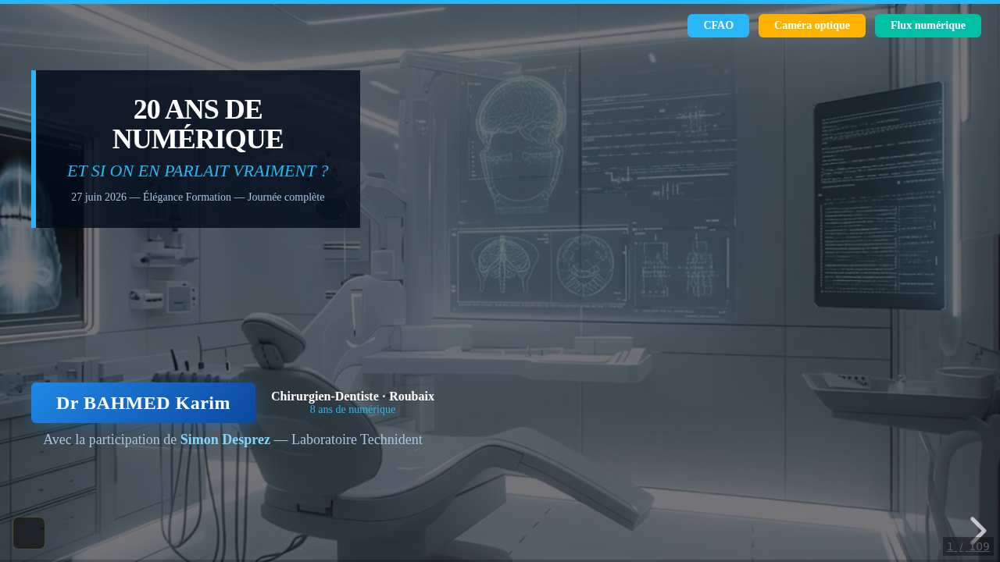
Slide 0 / 109
Bienvenue. Je suis Karim Bahmed, dentiste à Roubaix, 100% numérique depuis 8 ans. Je suis accompagné aujourd\'hui de Simon Desprez du laboratoire Technident qui interviendra sur la vision du prothésiste. Ce soir on parle concrètement — pas de marketing, du terrain.
Si je me perds
Merci d'être là. L'objectif aujourd'hui c'est de comprendre le numérique ensemble, concrètement.
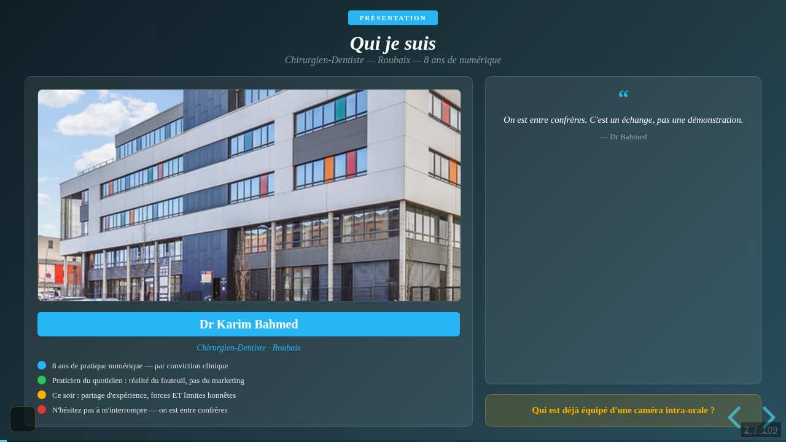
Slide 1 / 109
Je vais me présenter rapidement parce que je pense que vous méritez de savoir à qui vous avez affaire.
Karim Bahmed. Chirurgien-dentiste à Roubaix. Installé depuis 14 ans. Omnipraticien avec une orientation forte sur la prothèse et l\'implantologie.
Ce que je ne suis pas : consultant pour une marque. Formateur rémunéré par un fabricant. Influenceur dentaire. Je n\'ai aucune commission sur aucun des produits que vous allez voir aujourd\'hui.
Ce que je suis : un praticien qui a fait des erreurs coûteuses en passant au numérique, qui a mis 18 mois à trouver ses marques, et qui aujourd\'hui aurait mauvaise conscience de ne pas partager ce qu\'il a appris.
Un point important sur ma pratique. Je fais du numérique sur tout ce qui est fixé — couronnes, bridges, inlays — et sur toute mon implantologie. En revanche, sur les prothèses amovibles complètes, je reste en conventionnel dans la majorité des cas. Parce que les études sur la PAC numérique montrent des résultats intéressants mais pas encore systématiquement supérieurs. Et je refuse d\'utiliser un outil dont je ne suis pas convaincu juste parce qu\'il est à la mode.
Je vous parlerai de la PAC numérique en fin de journée si on a le temps. Mais ce n\'est pas le sujet central.
[QUESTION À LA SALLE]
Est-ce que certains d\'entre vous ont déjà eu une galère avec une empreinte conventionnelle ? Un bridge raté, une empreinte qui s\'est déformée, un prothésiste qui vous a rappelé à 17h pour vous dire qu\'il ne peut pas travailler sur l\'empreinte ?
[PAUSE — laisser quelqu\'un répondre si ça vient]
On a tous cette histoire. Moi j\'en ai plusieurs. Et c\'est en partie ce qui m\'a poussé à chercher autre chose.
Si je me perds
Je suis dentiste à Roubaix, 14 ans d'installation, et je partage mon expérience sans aucune commission.
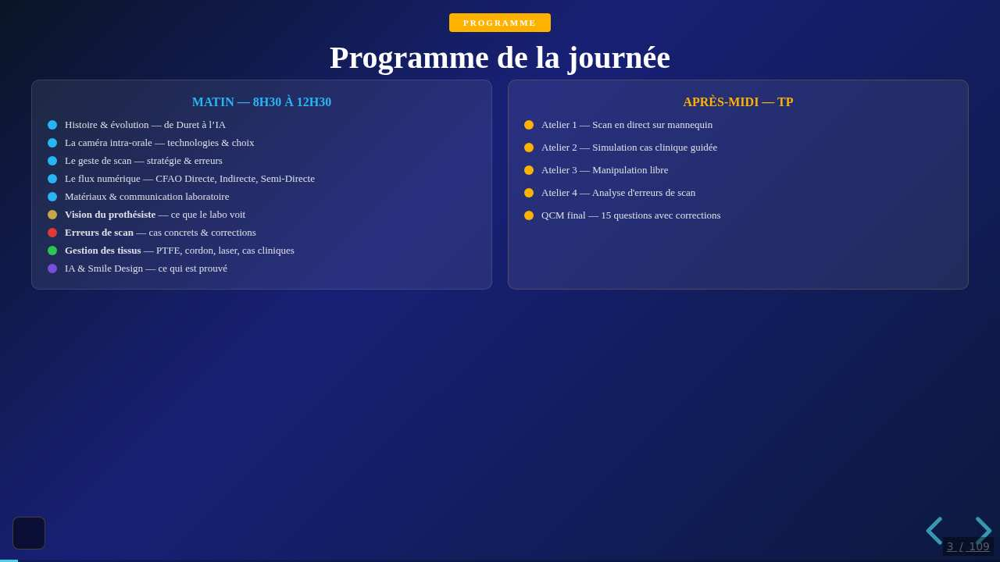
Slide 2 / 109
Bon. Le programme.
Ce matin, théorie. Histoire de la CFAO, technologies de capture, le geste de scan. Et surtout — la gestion des tissus mous. [PAUSE] C\'est LA partie que les formations commerciales zappent. Et c\'est LA partie qui change tout au fauteuil.
Cet après-midi, on passe en pratique. 4 ateliers sur mannequin. Et on finit par 15 QCM — pas pour vous noter, hein. Pour structurer ensemble ce qu\'on a retenu.
[PAUSE LOGISTIQUE]
Quelques infos pratiques. Toilettes au fond du couloir à gauche. Pause café vers 10h30. Déjeuner vers 12h30. On reprend à 14h, et on vise 17h30 grand maximum.
Les téléphones — je ne vous demande pas de les éteindre. Si vous avez une urgence patient, vous sortez, aucun problème. Par contre, si vous googlez un truc en rapport avec ce qu\'on dit — partagez-le. Les meilleures formations que j\'ai faites, c\'était quand les participants m\'apprenaient autant que moi à eux.
Et une règle. Si quelque chose n\'est pas clair, vous le dites. Tout de suite. Pas à la pause. Pas dans le couloir après. Pendant. [PAUSE] Parce que si vous avez une question, je vous garantis que trois autres personnes dans la salle ont exactement la même et n\'osent pas la poser.
On y va.
Si je me perds
Ce matin la théorie, cet après-midi la pratique sur mannequin. On finit par 15 QCM.
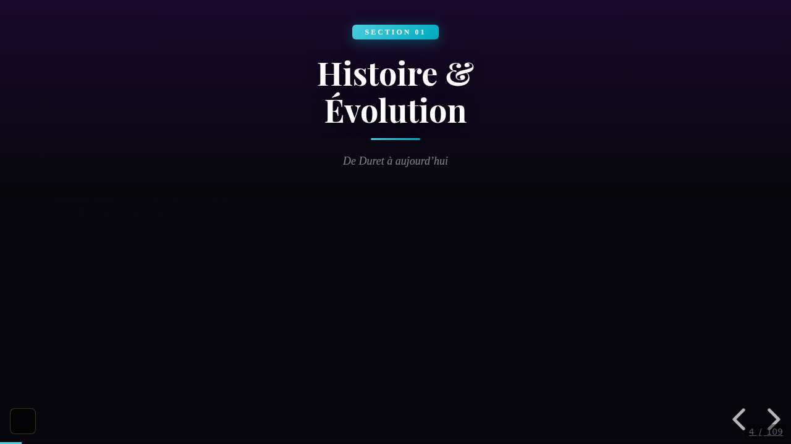
Slide 3 / 109
Section 1 — L\'histoire.
Je sais ce que vous pensez : "l\'histoire, c\'est pour les cours magistraux, pas pour une formation pratique."
Laissez-moi vous convaincre en 30 secondes que c\'est important.
Si vous comprenez d\'où vient cette technologie, vous comprenez pourquoi elle a ses limites actuelles. Et si vous comprenez ses limites, vous prenez de meilleures décisions cliniques.
Ça vaut 5 minutes. Promis, on ne s\'ennuie pas.
Si je me perds
Comprendre l'histoire permet de comprendre les limites de la technologie qu'on utilise.
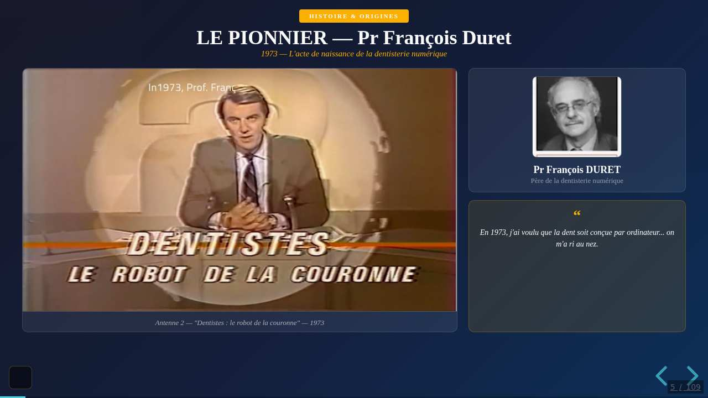
Slide 4 / 109
Qui ici connaît François Duret ? [PAUSE] Levez la main, pas de honte.
Pas forcément. Et pourtant, c\'est un peu le père de tout ce qu\'on fait aujourd\'hui.
François Duret. Dentiste français. 1973, Lyon. Il a 28 ans et il présente sa thèse sur la conception et fabrication assistée par ordinateur en dentisterie. Il parle de caméras optiques, d\'ordinateurs, de prothèses fabriquées par des machines. En 1973. [PAUSE]
Le jury l\'a validé. Ses confrères ? Ils l\'ont regardé comme s\'il débarquait de Mars.
Et le voilà sur Antenne 2. La télé nationale. Un dentiste qui parle de robots dentaires. Imaginez la tête des confrères le lendemain matin à la réunion de société odontologique.
[PAUSE]
Ce qui me touche dans cette histoire, c\'est que la résistance n\'était pas bête. Elle était humaine. On résiste à ce qu\'on ne comprend pas. Et souvent, ce sont les plus compétents — les plus attachés à leur technique — qui freinent le plus fort.
Qui a déjà eu un confrère proche qui l\'a freiné quand il s\'est intéressé au numérique ? [PAUSE] Ou au contraire, quelqu\'un qui vous a poussé ?
[PAUSE — échange si quelqu\'un répond]
50 ans plus tard, on est là. Et ce qu\'on va faire cet après-midi sur le mannequin, c\'est le descendant direct de ce que Duret a imaginé dans sa thèse en 1973. Ça mérite le respect.
Si je me perds
François Duret, 1973, 28 ans. Il a imaginé la dentisterie numérique 50 ans avant nous.
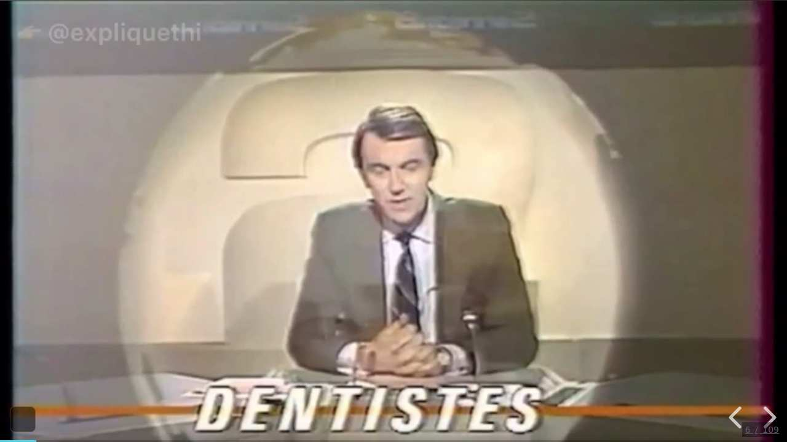
Slide 5 / 109
Cliquer sur Play pour lancer la vidéo Antenne 2. Laissez les dentistes regarder. C'est un moment fort.
Si je me perds
Regardons cette vidéo d'Antenne 2. C'est un morceau de l'histoire de notre profession.
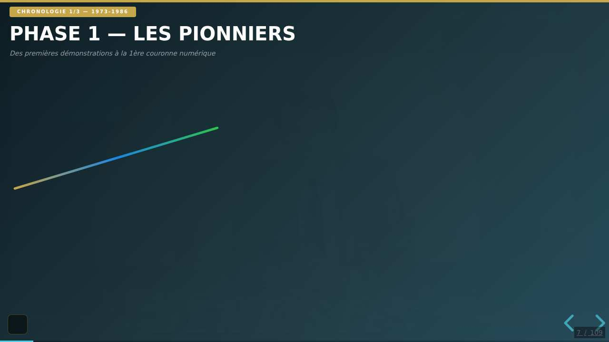
Slide 6 / 109
1973 à 1986. Les années pionnières.
[CLIC 1 — 1973] François Duret, 28 ans, présente sa thèse à Lyon. 288 pages sur la CFAO dentaire. Il passe sur Antenne 2.
[CLIC 2 — 1977] Première caméra par interférométrie moiré. Mise en place quasi chirurgicale.
[CLIC 3 — 1983] Profilométrie laser. Chaque génération un peu moins inconfortable.
[CLIC 4 — 1984] 1ère démo CFAO directe. Le "chairside" est né.
[CLIC 5 — 1985] Mörmann et Brandestini, Zürich. Prototype CEREC 1 "le Citron". 1er inlay usiné le 19 sept 1985.
[CLIC 6 — 1986] CEREC Lemon. 1ère couronne en 20 minutes. Siemens acquiert la licence.
Si je me perds
De 1973 à 1986 : les pionniers. 13 ans pour passer de l'idée à la première couronne numérique.
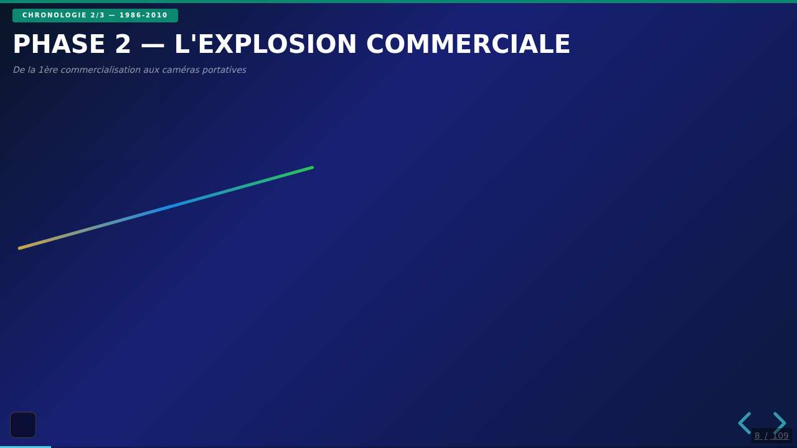
Slide 7 / 109
1986 à 2010. L\'explosion commerciale. Sauf que c\'est une explosion au ralenti. [PAUSE] Vingt-quatre ans pour passer du prototype au truc utilisable au quotidien. Vous voyez ?
[CLIC 1 — 1986] Siemens sort le CEREC 1 commercial. Un meuble énorme. Le prix d\'une voiture. Qui ici aurait acheté ça en 1986 ? [PAUSE] Personne, et c\'est normal.
[CLIC 2 — 1993] Premier système intégré complet. Mais réservé pendant 20 ans aux cabinets très motivés — ou très riches.
[CLIC 3 — 1997] Acquisition par contact. Un palpeur mécanique qui touche la dent. Lent, mais précis. Vous imaginez la scène au fauteuil ?
[CLIC 4 — 2003] Modélisation surfacique 3D. Enfin une couronne qui ressemble à une couronne à l\'écran.
[CLIC 5 — 2005] CEREC 3 Redcam. Plus ergonomique. Mais toujours cette fameuse poudre blanche que votre patient gardait dans la bouche pendant 20 minutes.
[CLIC 6 — 2007] Entités biogénériques. Le logiciel commence à proposer des morphologies dentaires automatiques. Le début de l\'intelligence dans la machine.
[CLIC 7 — 2009] Bluecam. Lumière bleue, premier modèle 3D en couleurs réelles. On commence à y voir quelque chose.
[CLIC 8 — 2010] Caméra portative. 15 ans de révolution. Et on n\'est qu\'au début.
Si je me perds
De 1986 à 2010 : l'industrialisation. 24 ans pour rendre le numérique utilisable au cabinet.
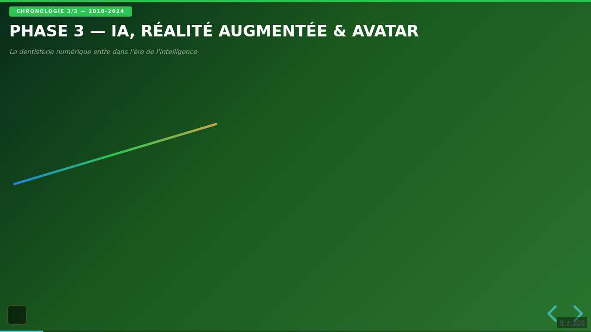
Slide 8 / 109
2010 à aujourd\'hui. Là, ça s\'emballe. Accrochez-vous.
[CLIC 1 — 2010] Caméra sans fil. Plus de câble qui tire. Liberté totale au fauteuil. La première fois que j\'ai tenu une caméra sans fil, j\'ai eu l\'impression de passer du fixe au portable dans les années 2000.
[CLIC 2 — 2012] Omnicam. Sans poudre. En couleur. Aujourd\'hui en 2026, 60% de pénétration dans les cabinets. Qui ici travaille avec une Omnicam ou équivalent ? [PAUSE]
[CLIC 3 — 2014] Scan couleur HD plus matching RX/optique. On superpose le scan et la radio. C\'est énorme pour l\'implanto.
[CLIC 4 — 2017] Réalité augmentée. Le scan plus le visage du patient, en temps réel. Votre patient se voit avec ses futures dents.
[CLIC 5 — 2018] L\'IA débarque dans les logiciels. Morphologie automatique, détection de caries. Le logiciel commence à réfléchir à votre place — en bien et en mal.
[CLIC 6 — 2022] DSD, Coachman. Le patient fait un test-drive de son sourire. Comme un essai routier, mais pour ses dents.
[CLIC 7 — 2024] Avatar patient 3D. Le jumeau numérique complet. [PAUSE] Regardez la courbe. Elle accélère. Et on est dessus, là, maintenant.
Si je me perds
Depuis 2010, tout s'accélère. IA, réalité augmentée, avatar 3D. Et on est dessus maintenant.
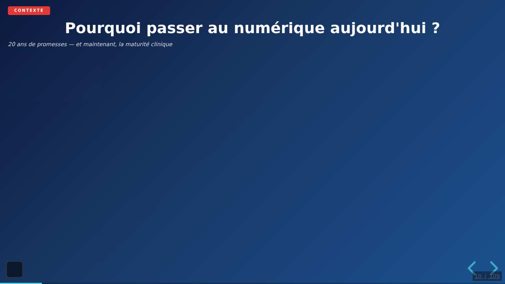
Slide 9 / 109
Pourquoi passer au numérique AUJOURD\'HUI ? Pas il y a 5 ans. Pas dans 3 ans. Aujourd\'hui. Parce qu\'en 6 ans, les preuves se sont accumulées.
[CLIC 1 — Précision prouvée]
Mangano 2020, revue systématique dans European Journal of Oral Implantology : équivalence numérique/conventionnel à 5 ans de suivi. Ender 2019 : la stratégie de scan compte plus que la caméra elle-même — jusqu\'à 80 µm de déviation si mauvais protocole. Tang 2020 : comparatif 5 caméras, confocale supérieure de 18 µm sur les grandes portées. Et l\'Umbrella Review Cureus 2025 : 10 revues, 30+ scanners — TRIOS 3 et Primescan supérieurs au conventionnel.
Le niveau de preuve est là. On n\'est plus dans les promesses.
[CLIC 2 — 90% préfèrent]
Wismeijer 2014, étude randomisée, Clin Oral Implants Research : 90% des patients préfèrent le scan optique. Lee et Gallucci 2013, même journal : confort perçu deux fois supérieur. Vasudavan 2010 dans l\'American Journal of Orthodontics : 77% de préférence pour le digital. Et Yuzbasioglu 2014 dans BMC Oral Health : zéro réflexe nauséeux, zéro alginate.
Votre meilleur ambassadeur, c\'est le patient qui dit à ses amis "mon dentiste n\'utilise plus de pâte".
[CLIC 3 — Envoi en secondes]
Un fichier STL c\'est 5 à 15 Mo. Un email suffit. 3Shape Unite, Medit Link, Dental Wings Connect — notification en temps réel au labo. Joda et Brägger 2015 dans Clin Oral Implants Research : réduction du temps clinique de 23%. Zéro déformation, zéro transport, zéro boîte perdue.
[CLIC 4 — Archivage à vie]
Mangano 2017 dans Dental Materials : traçabilité complète du flux numérique. L\'ADA rappelle que les empreintes physiques se dégradent en 2 à 5 ans. Un STL est consultable indéfiniment. Valeur médico-légale : preuve numérique horodatée, non altérable. Le plâtre casse. Le STL reste.
[CLIC 5 — Simulation]
Coachman 2022 dans le Journal of Esthetic and Restorative Dentistry : le Digital Smile Design permet un mock-up 3D imprimé testé en bouche avant toute fabrication. Joda 2017 dans le Journal of Prosthodontic Research : réduction des reprises de 62% avec validation digitale préalable. Zéro surprise à la pose.
[CLIC 6 — Moins de reprises]
Mon expérience personnelle sur 8 ans : moins 80% de retouches à la pose. 3 minutes investies en gestion tissulaire = 20 minutes gagnées en retouches. Joda et Brägger 2015 : gain de 35 minutes par cas en moyenne. Albeniz 2022 dans le Journal of Prosthodontics : ROI du scanner en 8 à 14 mois selon le volume de cas.
[CLIC 7 — CONCLUSION IA]
Et maintenant je vais vous dire quelque chose que personne ne dit dans les formations commerciales.
[PAUSE]
En 6 ans, il s\'est passé quelque chose de fondamental. L\'intelligence artificielle est entrée dans les scanners.
Róth et ses collaborateurs, mai 2025, Journal of Dentistry. TRIOS 5, 120 scans, avec et sans IA activée. Résultat : l\'IA améliore significativement la précision. Elle comble automatiquement les trous du mesh. Elle corrige les artefacts que vous n\'avez même pas vus. Elle nettoie, elle lisse, elle améliore la netteté.
Ce que ça veut dire concrètement ?
Il y a 5 ans, la différence entre une caméra à 10 000 euros et une à 25 000 euros se voyait cliniquement. Aujourd\'hui, l\'IA met toutes les caméras au même niveau. L\'IA sait reconstruire une zone que vous avez mal scannée.
Et ça change complètement la question d\'achat.
La question n\'est plus "quelle caméra acheter ?"
C\'est "quelle IA est derrière ?"
[PAUSE LONGUE — laisser cette idée s\'installer]
Quand vous comparerez deux caméras en sortant d\'ici, ne regardez plus les specs optiques. Regardez le logiciel. Regardez l\'IA de reconstruction. C\'est là — et uniquement là — que se fait la différence en 2026.
Si je me perds
Aujourd'hui le numérique repose sur des preuves, pas des promesses. On est dans la phase d'optimisation.
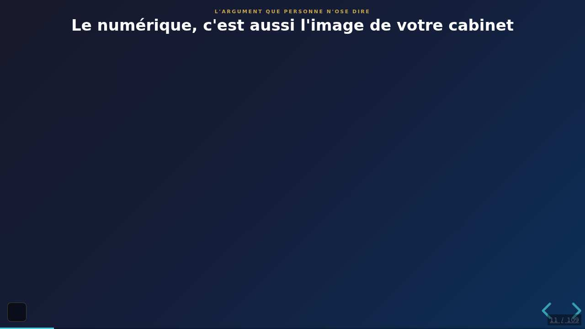
Slide 10 / 109
[CLIC 1 — L\'effet WAW]
Je vais vous parler d\'un argument que les formateurs n\'osent jamais aborder. Le numérique, c\'est aussi l\'image de votre cabinet.
Dodi et ses collaborateurs, décembre 2025, Dentistry Journal, 597 patients interrogés. 91.9% préfèrent un praticien qui utilise le numérique. 77.6% acceptent de payer plus cher pour un traitement digital. 90.7% pensent que le résultat esthétique est meilleur.
Le patient entre dans votre cabinet, il voit l\'écran, la caméra, son modèle 3D en temps réel. C\'est l\'effet WAW. Et cet effet WAW, il se traduit en bouche-à-oreille. Votre meilleur marketing, c\'est le patient qui dit à ses amis : "mon dentiste m\'a montré mes dents en 3D."
[CLIC 2 — Les freins]
Maintenant soyons honnêtes. Si le numérique est si bien, pourquoi la France est encore à ~40% d\'équipement ?
[QUESTION À LA SALLE] Qui dans cette salle hésite encore ? Et pourquoi ?
[LAISSER RÉPONDRE — 3-4 minutes]
Les 4 freins que j\'entends tout le temps :
"J\'ai pas le budget" — Albeniz 2022, Journal of Prosthodontics : ROI en 8 à 14 mois. Et les caméras sont passées de 25 000€ en 2015 à 9 990€ en 2026.
"Mon prothésiste ne veut pas" — En réalité, les prothésistes sont les PREMIERS à travailler en numérique. La CFAO, c\'est leur quotidien depuis des années. Si votre prothésiste hésite, c\'est peut-être qu\'il n\'a pas confiance dans la qualité de vos scans — pas dans le numérique. Parlez-lui, demandez-lui ce qu\'il attend de vous.
"Je suis trop vieux pour apprendre" — 3 à 6 mois de courbe. Et l\'IA réduit encore cette courbe.
"Le silicone marche très bien" — Oui. Mais 90% de vos patients préfèrent le scan. Et dans 5 ans, ils iront chez celui qui l\'a.
[CLIC 3 — Les chiffres]
France : environ 40% des cabinets équipés selon l\'enquête UFSBD/Comident 2023. Pays nordiques : plus de 60% selon Persistence Market Research 2024. Le mouvement est irréversible. La seule question c\'est le timing de votre entrée dans la danse.
[PAUSE CAFÉ ICI — ~10h30]
C\'est le bon moment pour une pause. 10 minutes. Revenez avec vos questions — j\'en vois qui ont des choses à dire.
Si je me perds
91% des patients préfèrent un praticien numérique. Le mouvement est irréversible.
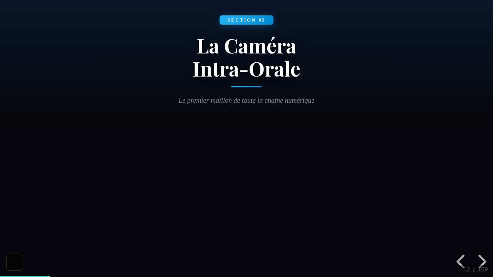
Slide 11 / 109
On rentre dans le vif du sujet.
La caméra intra-orale. Le premier maillon de la chaîne. Celui qui conditionne tout ce qui vient après.
J\'ai une conviction forte que je vais répéter plusieurs fois aujourd\'hui : si le scan est mauvais, peu importe la qualité du logiciel, peu importe le talent du prothésiste, peu importe la céramique — vous allez retoucher.
Et retoucher, c\'est quoi concrètement ?
C\'est un patient qui repasse dans le fauteuil. C\'est 20 à 45 minutes de votre agenda parti à la trappe. C\'est une relation de confiance qui s\'érode — même si le patient ne dit rien, il remarque quand il doit "revenir pour un ajustement". Et c\'est vous qui rentrez chez vous avec la boule au ventre.
[QUESTION À LA SALLE]
Combien de temps passez-vous en moyenne à retoucher vos bridges à la pose ? Honnêtement. Turbine, fraise diamantée, papier d\'occlusion...
[LAISSER RÉPONDRE]
Avant que je maîtrise correctement mon protocole de scan, je passais 20 à 30 minutes à retoucher des bridges qui auraient dû s\'asseoir du premier coup. Maintenant c\'est 5 minutes maximum, et souvent zéro. Cette différence, c\'est du chiffre d\'affaires, c\'est du confort, et c\'est de la qualité perçue par le patient.
[CE QUE LES DÉBUTANTS NE SAVENT PAS QU\'ILS NE SAVENT PAS]
Quand vous commencez, vous pensez que le problème vient de la caméra. Dans 90% des cas, il vient de vous. Et c\'est une bonne nouvelle — parce que vous pouvez le corriger.
Les erreurs de débutant les plus fréquentes dans l\'ordre :
Caméra trop loin — vous perdez la résolution.
Caméra trop proche — vous perdez la mise au point.
Trop rapide — l\'algorithme n\'a pas le temps.
Champ non sec — réflexions et zones grises partout.
Pas de retour aux occlusales quand le modèle dérive.
Chacune se corrige en une séance d\'entraînement. C\'est pour ça qu\'on fait des ateliers cet après-midi.
Si je me perds
La caméra est le premier maillon. Si le scan est mauvais, tout le reste sera mauvais.
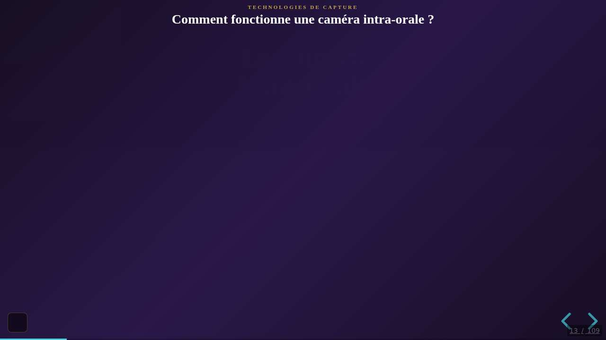
Slide 12 / 109
Comment ça fonctionne concrètement une caméra intra-orale ?
Réponse courte : de la lumière, des mathématiques et un ordinateur très rapide.
Réponse plus longue :
Pendant que vous balayez une dent, la caméra projette de la lumière structurée sur la surface. Elle enregistre des milliers d\'images par seconde. Elle calcule la position 3D de chaque point de la surface à partir de la déformation de la lumière projetée. Et elle reconstruit un modèle tridimensionnel en temps réel, sous vos yeux.
Ce que ça veut dire cliniquement : chaque zone que vous voyez en couleur sur l\'écran a été acquise avec une précision de l\'ordre de 20 à 50 µm. Chaque zone bleue ou grise n\'a pas été acquise correctement.
[ANECDOTE]
Quand j\'ai démarré avec ma première caméra, j\'ai demandé à mon représentant comment ça marchait. Il m\'a donné la brochure marketing. J\'ai passé une soirée à regarder des vidéos YouTube de physique optique. Ce n\'est pas indispensable — mais comprendre le principe change vraiment la façon dont vous gérez les problèmes quand ils arrivent.
Deux grandes familles de technologie coexistent aujourd\'hui. On va les voir l\'une après l\'autre.
[PETIT DICTIONNAIRE DU PRATICIEN NUMÉRIQUE]
Scan ou empreinte optique : même chose. C\'est le résultat de votre passage de caméra.
STL : le fichier 3D universel qui contient votre scan.
Modèle : la reconstruction 3D que vous voyez se construire à l\'écran.
Zone bleue : zone non acquise ou mal acquise. À corriger avant de valider.
Valider : confirmer que le scan est bon et le préparer pour l\'envoi.
CAO / CAD : Conception Assistée par Ordinateur. C\'est ce que fait votre prothésiste avec votre STL.
Flux numérique : la chaîne complète du scan jusqu\'à la pose.
Ces termes, vous les utilisez tous les jours dans 6 mois. Autant les avoir en tête maintenant.
Si je me perds
La caméra projette de la lumière, calcule la position 3D de chaque point, et reconstruit en temps réel.
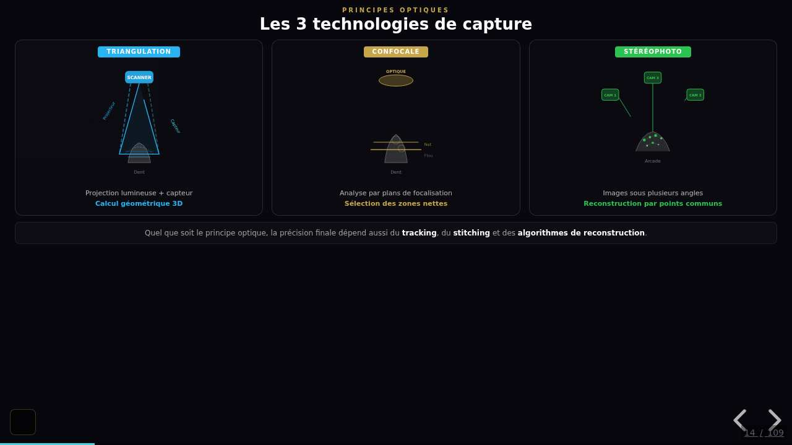
Slide 13 / 109
Les trois principes optiques. Côte à côte. Simplifions.
Triangulation. Un faisceau projeté, un capteur qui mesure l\'angle de retour. C\'est simple, rapide, léger. C\'est ce que j\'utilise au quotidien avec la Panda Smart. Le point faible ? Sensibilité à l\'humidité un peu plus élevée. Traduction au fauteuil : si votre patient salive beaucoup, ça peut poser problème.
Confocale. Là c\'est différent. Des plans de focalisation successifs. La caméra ne garde que les zones nettes à chaque profondeur. Résultat : plus précise de 18 µm sur les grandes portées — c\'est l\'étude de Tang en 2020. Mais la caméra est plus lourde et plus lente.
Stéréophotogrammétrie. Plusieurs caméras, plusieurs angles, reconstruction par points communs. La plus récente. Très précise, mais encore chère et spécialisée. On la voit surtout en recherche pour l\'instant.
[PAUSE]
Et maintenant, le message important. La différence entre une bonne confocale et une bonne triangulation ? Elle est petite. [PAUSE] La différence entre un praticien qui maîtrise son protocole et un praticien qui ne le maîtrise pas ? Elle est énorme. L\'outil, c\'est 20% du résultat. Les 80% restants, c\'est vous. Votre rigueur, votre geste, votre protocole.
Si je me perds
Trois technologies : triangulation, confocale, stéréophotogrammétrie. La différence est devenue marginale.
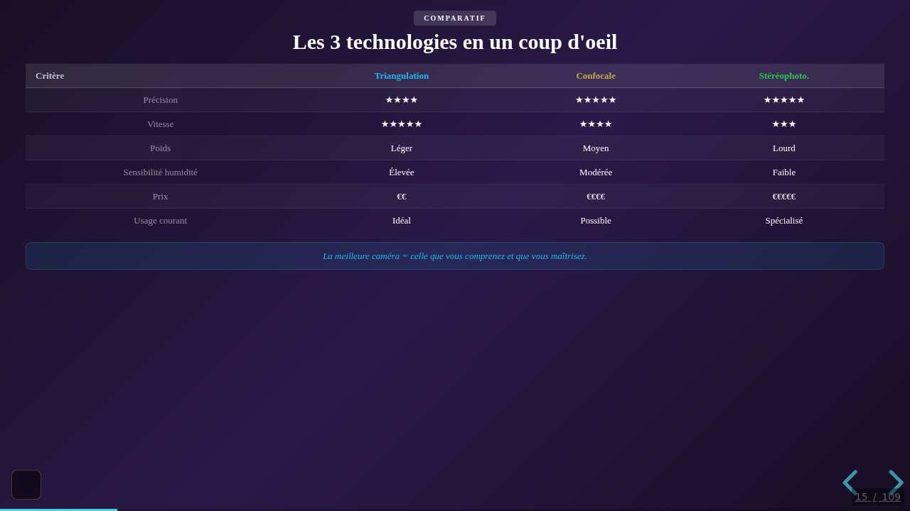
Slide 14 / 109
Je vais vous épargner le tableau comparatif avec 47 critères techniques que vous oublierez en sortant d'ici. Voici ce qui compte vraiment quand vous choisissez une caméra.
La précision sur vos cas habituels. Pas sur les cas idéaux du showroom avec un mannequin parfaitement sec. La précision sur une molaire mandibulaire, un peu de salive, un patient qui bouge. C'est ça la réalité clinique.
L'ergonomie. La sonde que vous allez tenir 45 secondes d'affilée en postérieur mandibulaire doit être confortable dans votre main. Testez-la avant d'acheter.
L'écosystème. Est-ce que votre prothésiste reçoit déjà des fichiers de cette caméra ? Est-ce que le logiciel est ouvert ou propriétaire ? Un système fermé, c'est un mariage forcé.
Et le critère le plus sous-estimé de tous : le support technique. J'ai eu une panne sur ma Panda un mercredi après-midi. Sonde revenue réparée le vendredi matin. Ça m'a coûté deux reports de rendez-vous et une nuit à m'inquiéter. Depuis, j'ai une sonde de backup. Pas glamour, mais nécessaire.
La meilleure caméra, c'est celle que vous comprenez et que vous maîtrisez.
Si je me perds
Ce qui compte, c'est pas la technologie optique. C'est vous, votre geste, votre protocole.
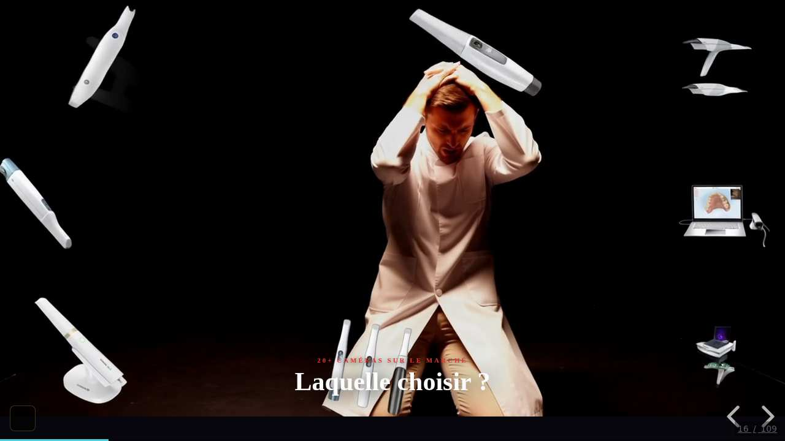
Slide 15 / 109
Regardez. Voilà ce que le marché vous propose en 2026. Plus de 20 caméras. Des premium à 25 000 euros. Des chinoises à 5 000. Des sans fil, des avec fil. Des grosses, des petites. Des avec IA, des sans.
Laissez le visuel vous parler un instant. C'est exactement ce que vous ressentez quand vous commencez à chercher. Le vertige du choix.
Vous avez un représentant 3Shape qui vous dit que c'est la meilleure. Un représentant iTero qui vous dit exactement la même chose. Medit qui vous explique qu'à ce prix-là c'est du vol de ne pas acheter. Et Panda qui vous dit qu'on peut faire aussi bien pour trois fois moins cher.
Qui a raison ? Personne. Et tout le monde en même temps. Parce que la bonne caméra, c'est celle qui correspond à votre pratique. À votre volume. À vos cas cliniques. À votre prothésiste.
On va voir ensemble les vrais critères de choix. Pas les spécifications techniques que vous oublierez demain. Les questions cliniques qui comptent réellement.
Si je me perds
Plus de 20 caméras sur le marché. La bonne c'est celle qui correspond à votre pratique.
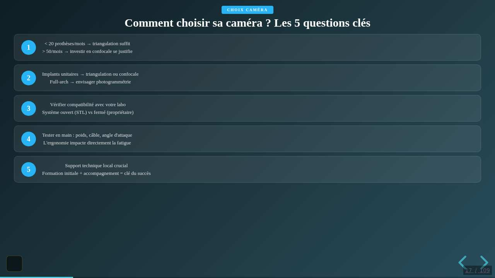
Slide 16 / 109
Cinq questions. C'est tout ce qu'il faut pour choisir sa caméra. Pas un tableau comparatif de 47 lignes. Cinq questions cliniques.
Première question : quel est votre volume de prothèses ? Moins de 20 par mois, une triangulation suffit largement. Au-delà de 50, investir dans une confocale commence à se justifier.
Deuxième question : quels types de cas faites-vous ? Des implants unitaires, les deux technologies conviennent. Du full-arch sur implants, là il faut envisager la photogrammétrie.
Troisième question : est-ce que votre prothésiste reçoit déjà des fichiers de cette caméra ? Vérifiez la compatibilité. Système ouvert en STL, ou système fermé en propriétaire.
Quatrième question : avez-vous tenu la sonde en main ? Pas sur un stand. En bouche. Le poids, le câble, l'angle d'attaque.
Cinquième question : quel est le support technique ? Formation initiale, accompagnement, réactivité du SAV. C'est la clé du succès.
Ma méthode personnelle : demandez une période d'essai au cabinet. Pas dans un showroom. Dans votre cabinet, sur vos patients, avec votre assistante. Si le fabricant refuse, c'est déjà une information. Pendant l'essai, faites tourner 10 cas représentatifs de votre pratique. À la fin, vous saurez.
Est-ce que certains d'entre vous sont actuellement en phase de décision d'achat ? Si c'est le cas, profitez de cet après-midi pour tester sur le mannequin.
Si je me perds
Demandez une période d'essai au cabinet. 10 cas représentatifs. Pas dans un showroom.
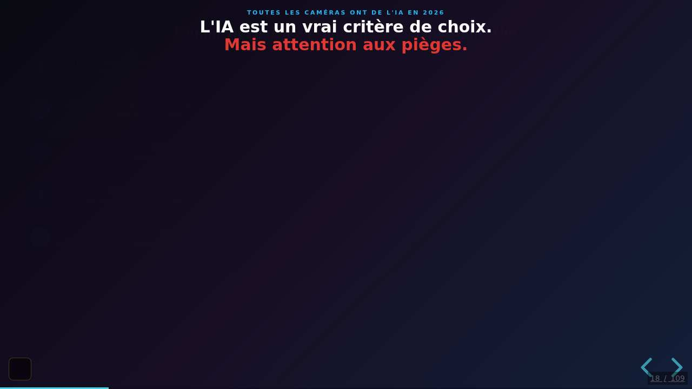
Slide 17 / 109
En 2026, toutes les caméras intègrent de l'intelligence artificielle. C'est un vrai critère de choix. Mais ce n'est pas le seul.
L'IA fait cinq choses concrètes dans votre caméra. Détection caries en temps réel. Filtrage automatique. Détection des limites de préparation. Design de couronne par deep learning. Et guidage novice. Ce sont de vrais progrès.
Mais toutes les marques ont l'IA maintenant. TRIOS, iTero, Medit, Panda. C'est devenu un standard, pas un différenciateur.
Et voilà ce que les commerciaux ne vous disent pas. Luke et Rezallah 2025, méta-analyse de 21 études : la spécificité varie de 11% à 98% selon les systèmes. L'IA ne détecte pas l'activité de la lésion. Elle voit une image, pas un processus biologique. Risque concret : surdiagnostic, surtraitement.
L'IA aide. Mais elle peut aussi halluciner. Gardez votre oeil clinique. Et quand vous comparez les caméras, comparez aussi le SAV.
Si je me perds
Toutes les caméras ont de l'IA en 2026. C'est un critère mais pas le seul. Comparez aussi le SAV.
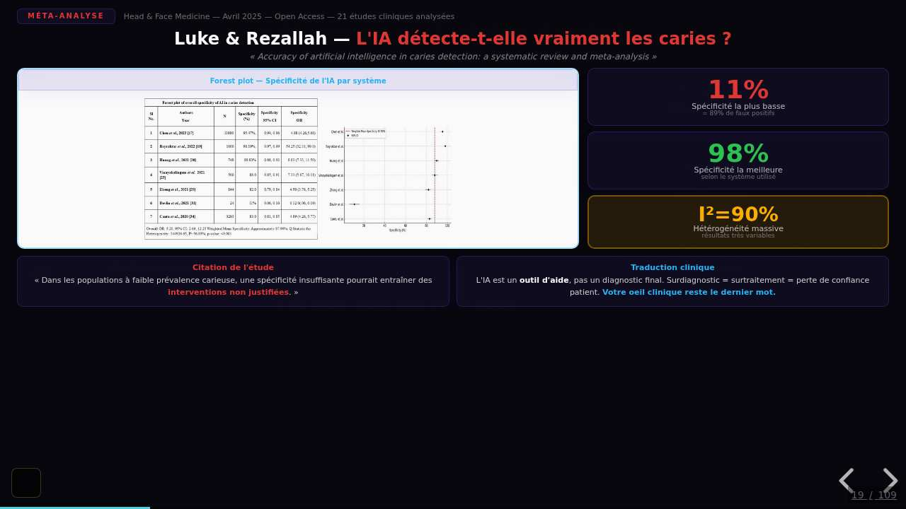
Slide 18 / 109
Regardez ce graphique. C'est un forest plot. Pour ceux qui n'en ont pas lu depuis la fac, chaque ligne représente une étude. Et ce qu'il mesure, c'est quelque chose de fondamental : est-ce que l'IA arrive à ne pas voir de carie quand il n'y en a pas. C'est la spécificité.
Luke et Rezallah, avril 2025, Head and Face Medicine, publication en open access. 21 études cliniques sur 6 ans, plus de 17 000 cas analysés. C'est le plus haut niveau de preuve dont on dispose.
Certains systèmes sont à 98%. Excellent. D'autres sont à 11%. Onze pour cent. Laissez ce chiffre s'installer. Sur 100 dents saines, l'IA en marque 89 comme cariées. Quatre-vingt-neuf faux positifs sur cent.
Concrètement, qu'est-ce que ça veut dire au fauteuil ? Si vous faites confiance à l'IA sans vérifier, vous risquez de poser votre fraise sur une dent saine. C'est du surtraitement. Et le patient ne sait pas que c'est l'IA qui s'est trompée.
L'autre chiffre : I-carré à 90%. Hétérogénéité massive. Les résultats varient énormément d'un système à l'autre. Vous ne pouvez pas dire globalement que l'IA marche ou ne marche pas. C'est beaucoup plus nuancé.
L'IA, oui. C'est un vrai progrès. Mais ça reste un outil. Votre sonde. Votre transillumination. Votre expérience clinique. C'est ça qui tranche. L'IA propose. Vous disposez.
Si je me perds
Luke 2025 : spécificité de l'IA entre 11% et 98%. L'IA propose, vous disposez.
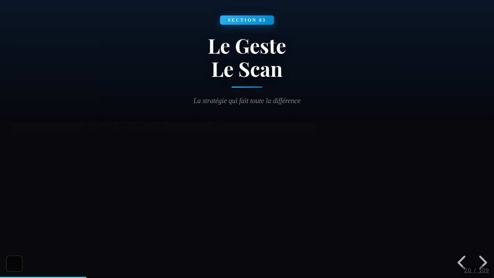
Slide 19 / 109
Le geste. La stratégie de scan.
Je vais commencer par quelque chose d\'inconfortable.
[PAUSE]
Ce n\'est pas la caméra qui fait la précision. C\'est vous.
J\'ai dit ça vite. Je vais le reformuler parce que c\'est vraiment important.
Une étude publiée en 2019 par Ender et ses collaborateurs dans l\'International Journal of Computer Dentistry a montré que la stratégie de scan — le chemin que vous suivez — peut générer jusqu\'à 80 µm de déviation sur une arcade complète. Indépendamment de la caméra utilisée.
80 µm. Pour référence, c\'est l\'épaisseur d\'un cheveu humain.
C\'est humiliant et libérateur à la fois. Humiliant parce que ça remet en cause l\'idée que la technologie fait tout. Libérateur parce que ça veut dire que l\'amélioration est entre vos mains — pas dans votre portefeuille.
[DÉBAT — 10 minutes]
Avant de passer au geste, une affirmation à débattre.
"Inutile de former son assistante au numérique. C\'est le praticien qui scanne, c\'est lui qui doit être formé."
D\'accord ou pas d\'accord ?
[LAISSER LE DÉBAT S\'INSTALLER — 5 minutes]
Ma position : c\'est faux. L\'assistante fait partie intégrante du protocole. Elle gère l\'aspiration, le timing, le confort du patient. Un praticien parfaitement formé avec une assistante non formée, c\'est 30% de qualité en moins.
J\'ai formé mon assistante pendant 3 mois. Aujourd\'hui elle repère les zones bleues avant moi. Elle connaît les 90 secondes du fil rétracteur aussi bien que moi. Elle me dit "tu as une zone bleue en 36 distal" avant que j\'aie tourné les yeux vers l\'écran.
Votre assistante n\'est pas un support logistique. Elle est un acteur clinique dans le flux numérique. Formez-la. Vraiment.
Si je me perds
Le geste de scan compte plus que la caméra. Ender 2019 : 80% de la variance, c'est vous.
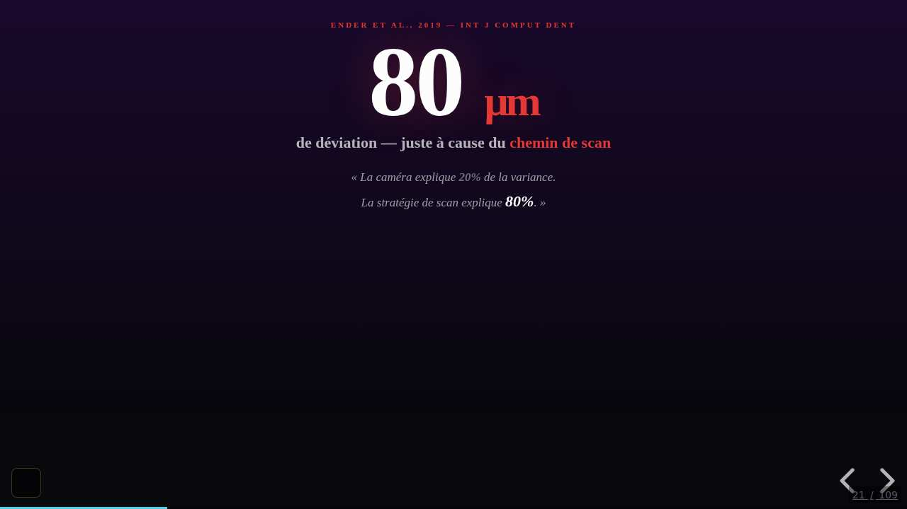
Slide 20 / 109
Ender 2019. Lisez cet article. C'est probablement le chiffre le plus important de toute cette formation.
80 microns. L'épaisseur d'un cheveu humain. C'est la déviation que vous pouvez générer sur une arcade complète juste en changeant votre chemin de scan. Indépendamment de la caméra.
[PAUSE LONGUE]
La caméra explique 20% de la variance. VOUS expliquez 80%.
C'est humiliant. Et c'est libérateur. Humiliant parce que ça remet en cause l'idée que la technologie fait tout. Libérateur parce que ça veut dire que l'amélioration est entre vos mains — pas dans votre portefeuille.
L'ordre optimal validé par Ender et confirmé par Imburgia 2017 :
Occlusales en premier — pour l'ancrage spatial.
Vestibulaire — faces externes.
Lingual — faces internes.
Interproximales en dernier — sonde à 45 degrés.
Toujours dans cet ordre. À chaque fois. Sans exception.
[QUESTION]
Est-ce que certains d'entre vous qui utilisent déjà une caméra ont un ordre différent ?
[LAISSER RÉPONDRE]
Si je me perds
80 microns de déviation selon le chemin de scan. L'épaisseur d'un cheveu. Indépendamment de la caméra.
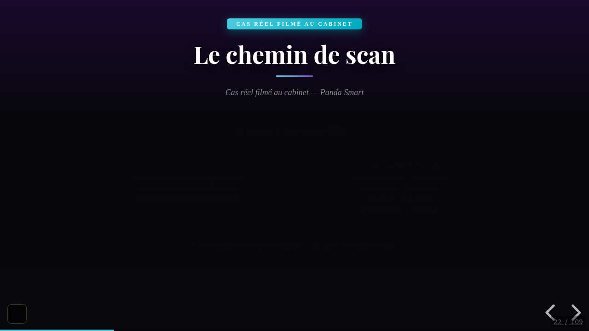
Slide 21 / 109
On va maintenant passer à la partie pratique. Je vais vous montrer mon protocole de scan complet, filmé au cabinet sur un vrai patient.
Vous allez voir simultanément deux choses : ce que je fais en bouche — et ce qui apparaît à l\'écran en temps réel.
Trois choses essentielles AVANT de scanner :
1. Éteindre le scialytique — la lumière parasite fausse la triangulation optique
2. Sécher systématiquement — la salive crée des artéfacts
3. Aspiration en bouche — pour maintenir le champ sec pendant tout le scan
Et une chose que vous remarquerez : je regarde l\'écran, pas la bouche du patient. Je pilote le scanner en regardant le modèle 3D se construire en temps réel.
Le montage dure 3 minutes 49. On va voir les 3 étapes — maxillaire, mandibule, occlusion — puis la vérification et le résultat final.
Prêts ? On y va.
Si je me perds
Je vais vous montrer mon protocole de scan filmé au cabinet, en temps réel.
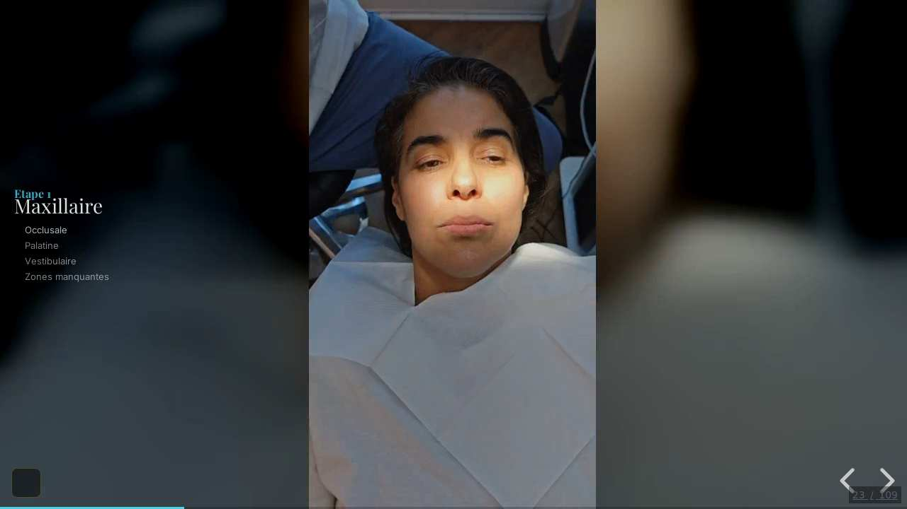
Slide 22 / 109
La vidéo tourne toute seule avec la musique. Je vais commenter en direct ce que vous voyez.
[PAUSE]
Là, le maxillaire. 1 minute 39. Regardez : scialytique, séchage, et on lance le scan. Vous voyez la fenêtre PC qui apparaît ? C'est en temps réel.
Maintenant la mandibule. 1 minute 07. Séchage, occlusale, linguale, vestibulaire. Regardez bien la fin — vous allez voir un dédoublement 36-37. Qui a déjà eu ce problème ?
[PAUSE]
Là, correction IA. Je clique sur Terminé et — hop — l'IA corrige instantanément. Pas de retouche manuelle.
Occlusion, 20 secondes. Gauche : match. Droite : match. C'est validé.
Vérification, 31 secondes. Je contrôle chaque arcade.
Résultat : empreinte 3D complète. Corrigée en un clic. Vous voyez la puissance du truc ?
Si je me perds
Regardez : scialytique éteint, séchage, aspiration, et je regarde l'écran pas la bouche.
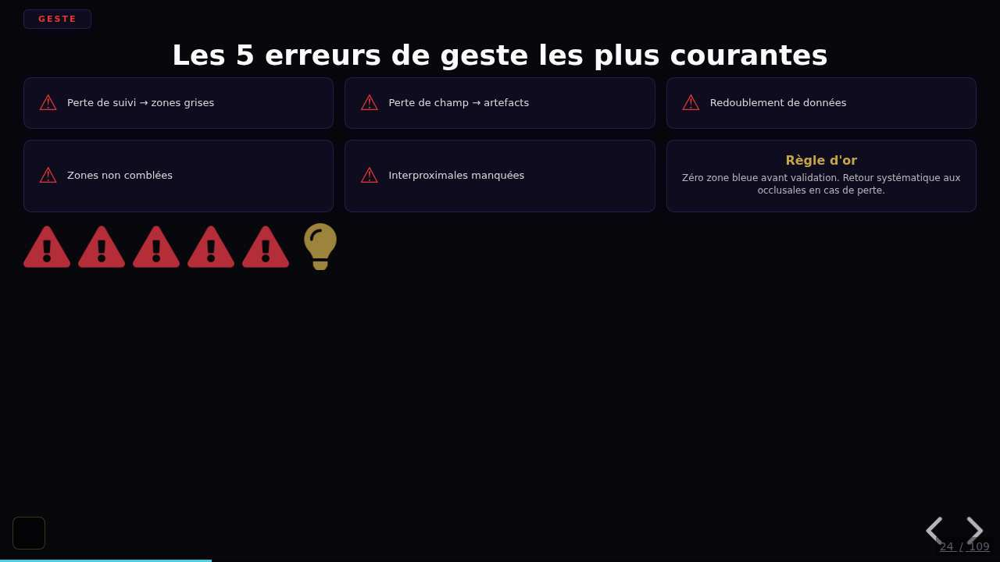
Slide 23 / 109
Le geste physique. Quelques détails pratiques.
Tenue de la sonde : comme un stylo, pas comme une turbine. Les doigts en appui dorsal sur la sonde, pouce dessous. Appui digito-palmaire pour la stabilité. Le coude légèrement décollé du corps.
Position du patient : en postérieur maxillaire, patient allongé, tête légèrement tournée vers vous. En postérieur mandibulaire — la zone la plus difficile de toutes — patient en position semi-assise, tête tournée vers vous, bouche ouverte à 70% environ.
[ANECDOTE]
Mes 3 premiers mois avec la caméra, je demandais aux patients d\'ouvrir grand. Erreur. Plus la bouche est ouverte en mandibulaire, plus la langue monte et bloque l\'accès lingual. En demandant au patient d\'ouvrir à 70% seulement et d\'abaisser légèrement la langue, vous gagnez 3 à 4 mm d\'espace de manœuvre. Ça change tout sur les zones 37 et 47.
[DISCUSSION OUVERTE — 5 minutes]
Quand vous avez scanné pour la première fois, quelle a été votre plus grande surprise ? Positive ou négative.
[LAISSER 3-4 PERSONNES RÉPONDRE]
Les réponses que j\'entends le plus souvent :
Surprise positive : "C\'est plus rapide que je pensais."
Surprise négative : "Je ne savais pas où regarder — l\'écran ou la bouche."
Et ma préférée, que j\'entends régulièrement : "J\'ai réalisé que ma gestion des tissus était catastrophique."
C\'est normal. C\'est même rassurant. Le premier scan révèle toujours ce qu\'on ne savait pas qu\'on ne savait pas. C\'est le seul moyen de progresser.
Si je me perds
Les 5 erreurs : champ non sec, geste aléatoire, perte de suivi, zones non comblées, interprox manquées.
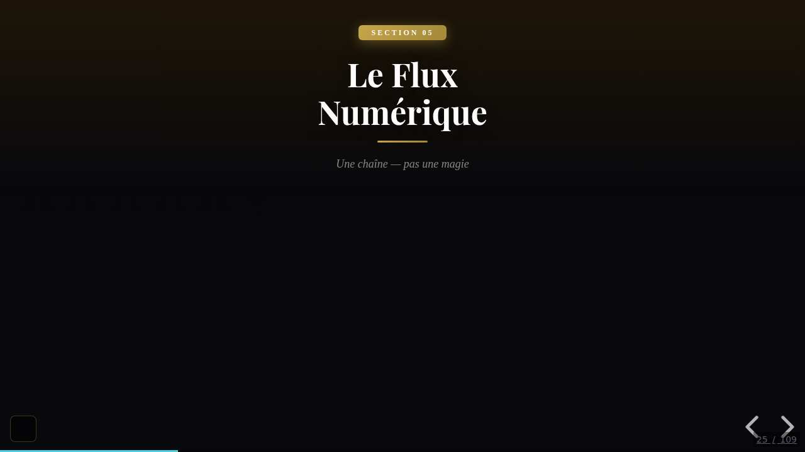
Slide 24 / 109
Le flux numérique complet. On a vu ce matin comment choisir sa caméra, comment scanner correctement. Maintenant on va voir ce qui se passe après. Parce que le scan, ce n'est que le point de départ.
La chaîne numérique, c'est 5 maillons. Scan, conception, fabrication, contrôle, pose. Comme toute chaîne, elle est aussi solide que son maillon le plus faible.
Devinez quel est le maillon le plus faible dans 80% des cas ? Le scan. Tout revient au scan. C'est pour ça qu'on y a passé autant de temps ce matin. Et c'est pour ça que cette section va vous montrer comment chaque maillon dépend du précédent.
Si je me perds
Le flux numérique c'est une chaîne de 5 maillons. Aussi solide que le plus faible.
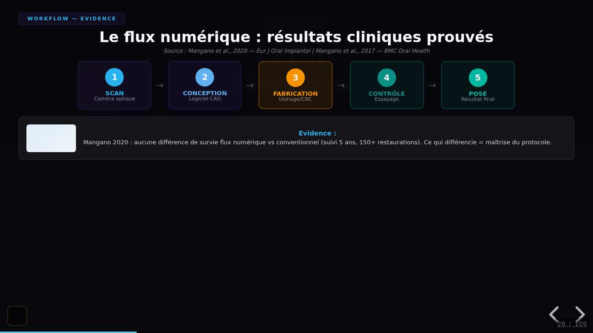
Slide 25 / 109
Mangano et ses collaborateurs, 2020, European Journal of Oral Implantology. Revue systématique.
Conclusion principale : aucune différence de taux de survie entre flux numérique et flux conventionnel sur un suivi à 5 ans.
C\'est rassurant. Et c\'est l\'argument à donner à vos patients qui vous demandent "mais est-ce que c\'est vraiment aussi fiable ?"
Mais la conclusion qui m\'a le plus frappé — et qui n\'est pas dans le résumé, elle est dans la discussion — c\'est que les résultats du flux numérique sont fortement corrélés à la maîtrise du protocole par le praticien.
En d\'autres termes : entre des mains expertes, le numérique fait aussi bien que le conventionnel. Entre des mains qui débutent et ne sont pas formées, il peut faire moins bien.
C\'est pour ça que la formation compte. C\'est pour ça que vous êtes là aujourd\'hui.
Si je me perds
Mangano 2020 : aucune différence de survie numérique vs conventionnel à 5 ans.
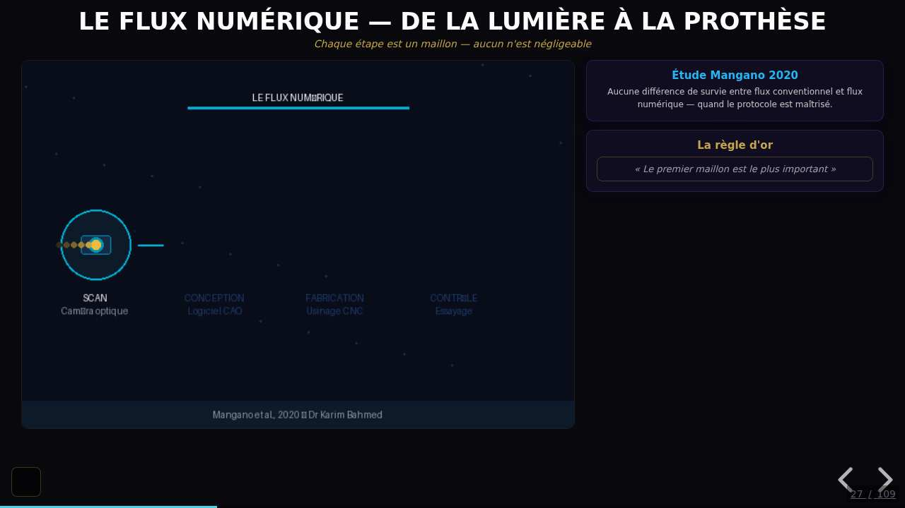
Slide 26 / 109
Les 5 maillons du flux numérique.
Scan. Conception. Fabrication. Contrôle. Pose.
Chacun conditionne le suivant. Une erreur à l\'étape 1 se propage et s\'amplifie.
[ILLUSTRATION]
Une déviation de 50 µm sur votre scan donne 50 µm d\'erreur sur le modèle 3D. Le prothésiste conçoit sur ce modèle à 50 µm près. L\'usinage est précis à 10 µm près. Vous arrivez à la pose avec une pièce prothétique décalée de 50 µm.
50 µm sur une couronne, ça se voit — à l\'œil nu, à la sonde, au papier d\'occlusion. Ce n\'est pas catastrophique mais ça ne s\'assoit pas proprement. Et vous retouchez.
Si votre scan avait été à 15 µm, vous n\'auriez pas retouché.
C\'est pour ça que le scan est la fondation. Et une fondation qui bouge, ça ne pardonne pas.
[C\'EST QUOI UN FICHIER STL ?]
STL. Standard Tessellation Language. Vous allez entendre ce mot des centaines de fois.
Explication simple : c\'est une photo en 3D de votre scan. Comme un JPG est une image 2D, un STL est un modèle 3D. Il contient la forme exacte de vos préparations, dents adjacentes, antagonistes.
Ce fichier, vous l\'envoyez à votre prothésiste par email, plateforme en ligne, ou clé USB. Taille : 5 à 15 mégaoctets pour une arcade. S\'envoie par email sans problème.
Ce que le STL ne contient PAS : la teinte, les infos cliniques, les notes. C\'est pour ça qu\'on joint toujours une note clinique et une photo de teinte. Le STL c\'est la géométrie. Le reste, c\'est vous qui le fournissez.
Si je me perds
Scan, conception, fabrication, contrôle, pose. Une erreur au scan se propage à chaque étape.
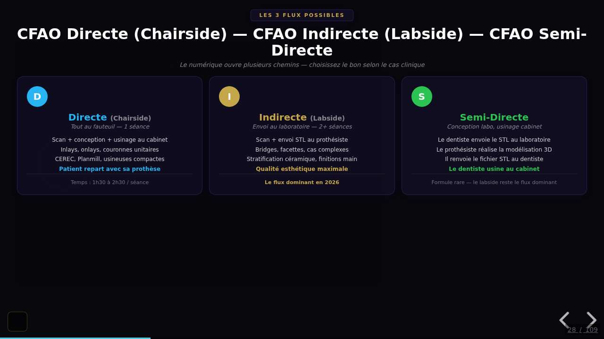
Slide 27 / 109
Le flux numérique, ce n'est pas un seul chemin. C'est trois possibilités.
[CLIC 1 — CHAIRSIDE]
Le chairside. Tout se fait au cabinet en une seule séance. Vous scannez, vous concevez sur votre logiciel, vous usinez dans votre usineuse de table, et le patient repart avec sa restauration. C'est le rêve du CEREC depuis 1985 — et en 2026, ça marche vraiment.
[CLIC 2 — LABSIDE]
Le labside. C'est le flux classique numérique. Vous scannez, vous envoyez le STL au prothésiste, il conçoit, il usine ou il presse, il stratifie, et il vous renvoie la pièce. C'est le flux que la plupart d'entre vous connaissent déjà ou vont découvrir.
[CLIC 3 — HYBRIDE]
Et la semi-directe. Le dentiste scanne et envoie le STL au labo. Le prothésiste fait toute la modélisation 3D — c'est son expertise. Puis il renvoie le fichier STL au dentiste, qui usine la pièce au cabinet. On combine l'expertise de conception du labo avec la réactivité de l'usinage au cabinet.
[QUESTION]
Est-ce que certains d'entre vous ont déjà une usineuse au cabinet ? Main levée ?
[PAUSE — compter]
OK. On va voir ce que ça change concrètement.
Si je me perds
Trois flux : directe au fauteuil, indirecte via le labo, semi-directe en combinant les deux.
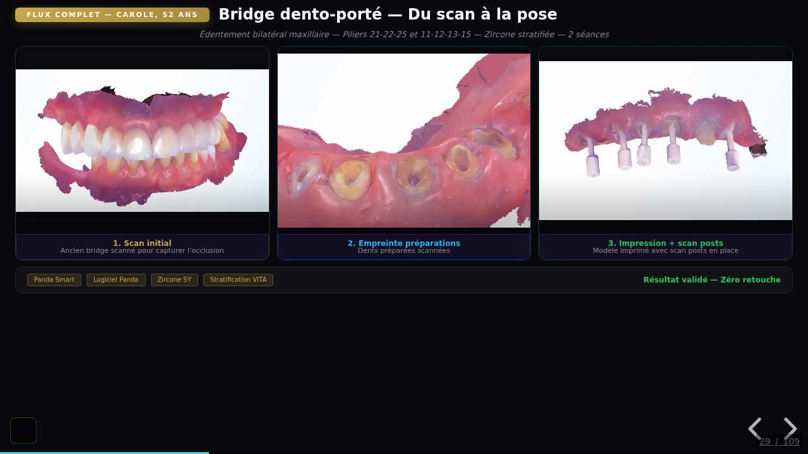
Slide 28 / 109
Carole, 52 ans. Bridge dento-porté maxillaire. Édentement bilatéral. Piliers 21-22-25 et 11-12-13-15. Zircone 5Y stratifiée VITA. Et le résultat final : zéro retouche à la pose.
Ce cas illustre le flux numérique complet du début à la fin. Vous avez trois vidéos filmées au cabinet. La première, c'est le scan de l'ancien bridge pour capturer l'occlusion avant de le déposer. La deuxième, c'est l'empreinte des préparations. La troisième, c'est le modèle imprimé avec les scan posts en place.
Le prothésiste nous renverra les vidéos du travail 3D, conception et fraisage. Mais pour l'instant, concentrons-nous sur ce qui se passe au cabinet et sur la partie manuelle : la sculpture céramique.
Si je me perds
Cas Carole, 52 ans. Bridge complet du scan à la pose. Zéro retouche.
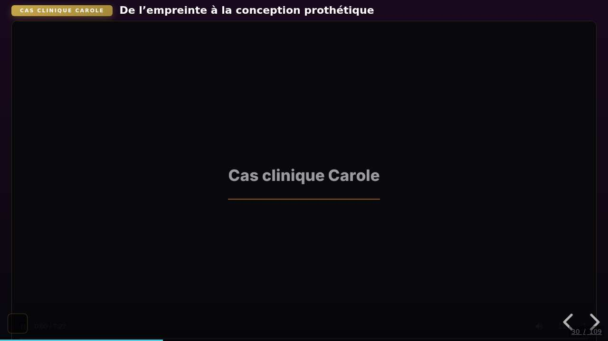
Slide 29 / 109
On va regarder ensemble ce qui se passe après l'envoi du fichier STL au laboratoire. C'est la partie que la plupart des dentistes ne voient jamais. Et c'est dommage, parce que comprendre le travail du prothésiste vous rend meilleur prescripteur.
Cette vidéo de 7 minutes 30 montre le travail complet sur le cas de Carole. Le matching des empreintes numériques. La conception des inlay-cores. Les chapes. Le bridge en zircone. Puis la partie manuelle : la stratification céramique, les cuissons, les finitions.
Le message est simple. Le logiciel guide. Mais le prothésiste décide. Le numérique n'est pas automatique. Il permet de travailler plus précisément, mais il nécessite toujours une vraie expertise humaine.
Regardez bien les photos de fin. C'est de l'orfèvrerie. Et le résultat final, le sourire de Carole à 6 mois. C'est ça le vrai flux numérique. La technologie au service de l'art prothétique. Pas l'inverse.
Si je me perds
La vidéo montre le travail du prothésiste. Le logiciel guide, mais le prothésiste décide.
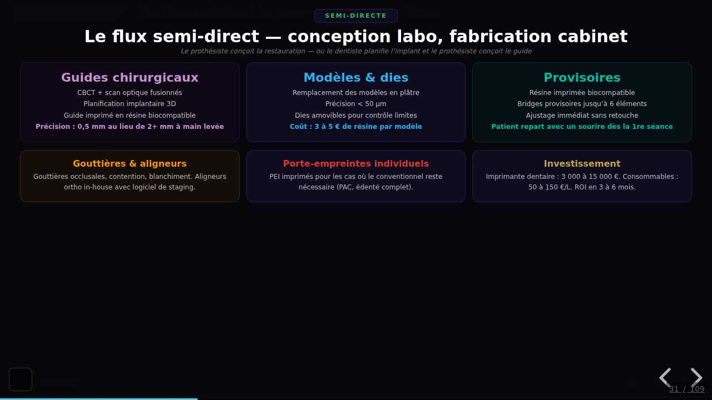
Slide 30 / 109
L'impression 3D. C'est le pilier du numérique dont on ne parle pas assez.
Quand on dit "numérique au cabinet", tout le monde pense scanner et usineuse. Mais l'imprimante 3D, c'est peut-être l'investissement avec le meilleur retour.
[GUIDES CHIRURGICAUX]
Les guides chirurgicaux. Vous fusionnez le CBCT et le scan optique dans un logiciel de planification — Blue Sky Plan, coDiagnostiX, Implant Studio. Vous planifiez vos implants en 3D. Et vous imprimez un guide en résine biocompatible qui se clipse en bouche.
Résultat : une précision de placement de 0,5 mm en moyenne, contre 2 mm ou plus à main levée. Et surtout, une chirurgie plus courte, moins invasive, et prédictible.
[MODÈLES]
Les modèles imprimés. 3 à 5 euros de résine par modèle. Précision inférieure à 50 microns. Avec des dies amovibles pour contrôler les limites. Plus de plâtre, plus de coulée, plus de bullage.
[PROVISOIRES]
Les provisoires imprimés. Un bridge provisoire de 6 éléments, imprimé en résine biocompatible, ajusté directement en bouche sans retouche. Le patient sort de chirurgie implantaire avec un sourire.
[GOUTTIÈRES]
Les gouttières. Occlusales, de contention, de blanchiment. Plus besoin de PVS et de modèle en plâtre. Scan, design, impression, et c'est prêt le lendemain matin.
Et les aligneurs in-house — pour les praticiens qui font de l'orthodontie, c'est une révolution. Vous contrôlez toute la chaîne.
[INVESTISSEMENT]
L'investissement. 3 000 à 15 000 euros selon l'imprimante. Formlabs, SprintRay, Asiga, UNIZ. Les consommables, c'est 50 à 150 euros le litre. Un guide chirurgical coûte environ 2 euros de résine. Un modèle, 3 à 5 euros.
Le ROI est spectaculaire — souvent 3 à 6 mois si vous faites régulièrement de l'implantologie.
Si je me perds
L'impression 3D c'est peut-être le meilleur ROI du cabinet. Guides, modèles, provisoires.
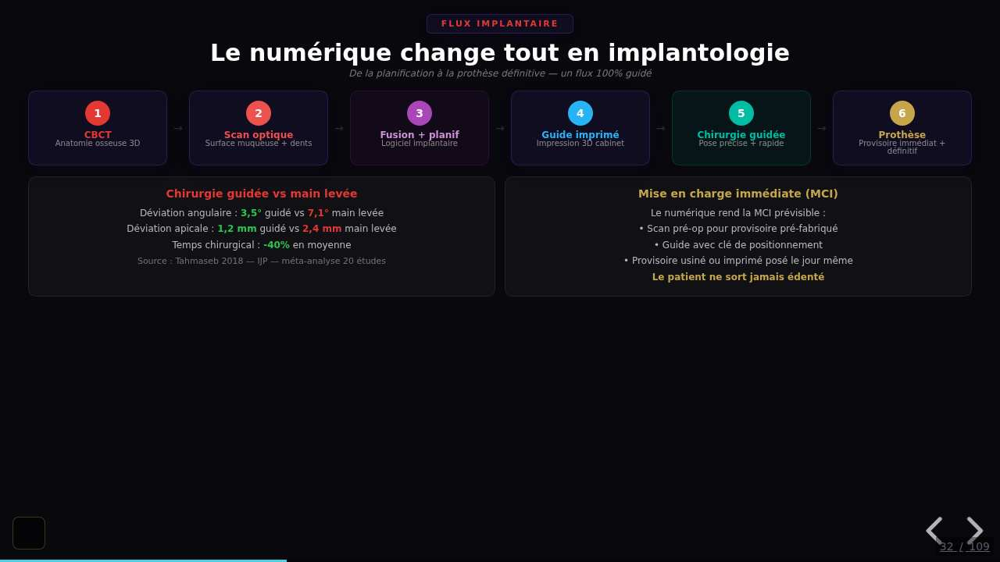
Slide 31 / 109
Le flux implantaire numérique. C'est probablement là où le numérique a le plus d'impact clinique.
[LE FLUX EN 6 ÉTAPES]
1. CBCT — vous avez l'anatomie osseuse en 3D. Hauteur, largeur, densité, position du nerf alvéolaire inférieur, position du sinus.
2. Scan optique — la surface. Gencive, dents adjacentes, antagonistes.
3. Fusion — vous superposez les deux dans un logiciel de planification. Blue Sky Plan, coDiagnostiX, Implant Studio, ou le logiciel intégré de votre caméra. Vous voyez la situation en 3D complet — os et surface — et vous planifiez l'axe, la profondeur, le diamètre de l'implant.
4. Guide — vous imprimez un guide chirurgical au cabinet ou vous le commandez au labo. Il se clipse en bouche et guide votre foret dans l'axe exact que vous avez planifié.
5. Chirurgie guidée — plus rapide, plus précise. Tahmaseb 2018, méta-analyse de 20 études : déviation angulaire de 3,5° en guidé contre 7,1° à main levée. Déviation apicale 1,2 mm contre 2,4 mm. Et temps chirurgical réduit de 40%.
6. Prothèse — et c'est là que le numérique boucle la boucle. Parce que vous avez planifié en amont, vous pouvez pré-fabriquer le provisoire. Le patient sort de chirurgie avec des dents.
[MCI]
La mise en charge immédiate. Avant le numérique, c'était risqué et imprévisible. Avec le numérique, c'est un protocole reproductible. Vous scannez avant l'intervention, vous fabriquez le provisoire en avance, vous posez l'implant, vous vissez le provisoire. Le patient ne sort jamais édenté.
C'est un argument massif pour vos patients. Et c'est un argument de différenciation pour votre cabinet.
Si je me perds
Le flux implantaire : CBCT + scan + planification + guide imprimé + chirurgie guidée.
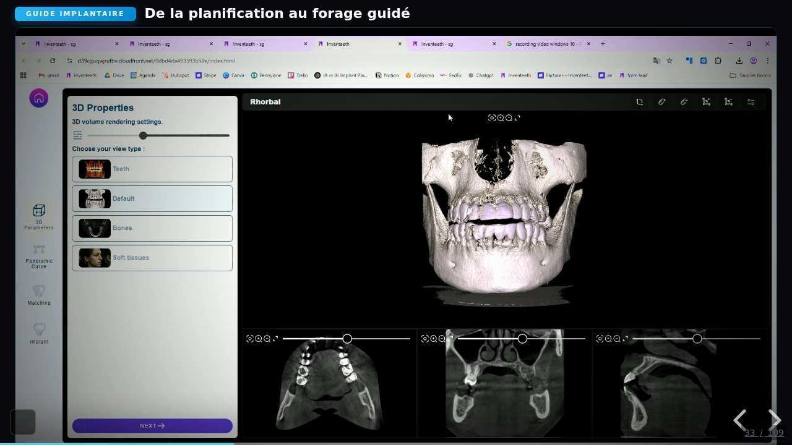
Slide 32 / 109
Regardez maintenant en vidéo ce que ça donne concrètement. On passe de la théorie à la réalité clinique.
Vous allez voir la planification implantaire sur le logiciel. L'implant positionné en 3D, l'axe choisi en fonction de l'os disponible et de la future prothèse. Puis la conception du guide chirurgical, directement à partir de cette planification. Le guide imprimé en résine, reçu au cabinet. Le forage guidé en bouche. Et le résultat final.
C'est exactement le flux en 6 étapes qu'on vient de voir en théorie. Mais cette fois, vous le voyez se dérouler sur un vrai cas. Regardez bien la précision du positionnement. La vidéo dure 3 minutes. On en discute juste après.
Si je me perds
Chirurgie guidée : 3,5° de déviation contre 7,1° à main levée. Tahmaseb 2018.
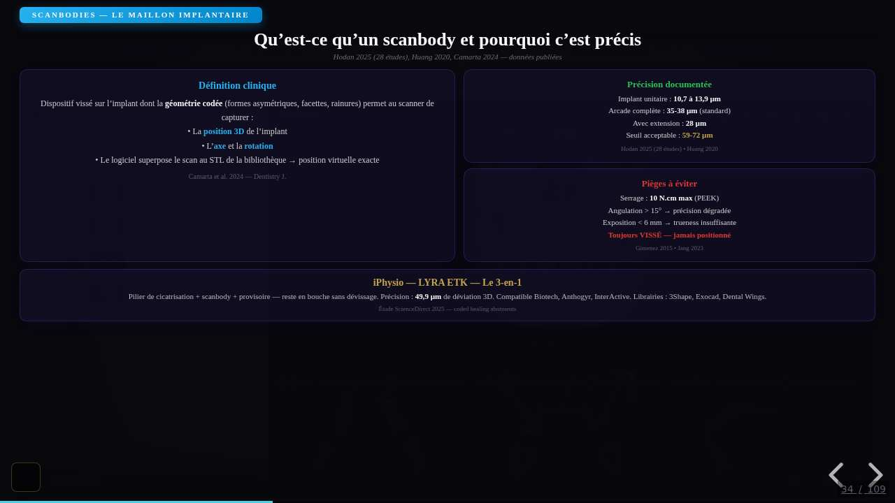
Slide 33 / 109
Les scanbodies. C'est le maillon qui relie l'implant au numérique. Et c'est un maillon que beaucoup de praticiens sous-estiment.
Un scanbody, c'est un petit dispositif avec une géométrie codée. Des facettes, des rainures asymétriques, des formes que le logiciel reconnaît instantanément. Vous le vissez sur l'implant. Le scanner le capture. Le logiciel reconnaît la géométrie et la superpose au fichier STL de la bibliothèque du fabricant. Résultat : position, axe et rotation de l'implant avec une précision de 10 à 14 microns en unitaire.
Hodan 2025, une revue systématique de 28 études, a montré que les designs cylindriques sont les plus précis. Huang 2020 a mesuré qu'en arcade complète, on obtient 35 à 38 microns en standard. Avec un scanbody à extension, on descend à 28 microns.
Maintenant les pièges. Premier piège : serrer trop fort. 10 Newton-centimètres maximum sur les PEEK. Deuxième piège : angulation supérieure à 15 degrés, la précision chute. Troisième piège : moins de 6 millimètres d'exposition au-dessus de la gencive.
Et la règle absolue : vissé, jamais positionné. Sur implant, on visse. Point.
Une innovation intéressante : l'iPhysio de LYRA ETK. Un pilier 3-en-1 qui fait cicatrisation, scanbody et provisoire. Précision mesurée à 49,9 microns. Compatible avec plusieurs connectiques.
Si je me perds
Le scanbody c'est le maillon entre l'implant et le numérique. Toujours vissé, jamais positionné.
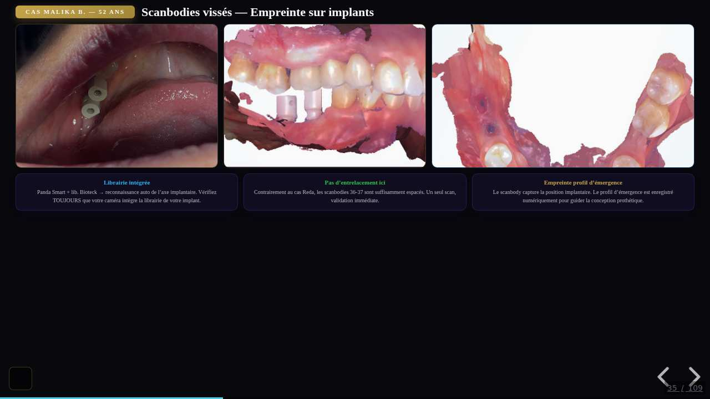
Slide 34 / 109
Cas Malika B., 52 ans. Deux couronnes sur implants Bioteck Kontact en 36 et 37.
Regardez les photos. Les scanbodies Bioteck sont vissés sur les implants. Pas posés. Vissés. La librairie Bioteck est intégrée dans Panda Smart. Dès que vous scannez, le logiciel reconnaît la géométrie et place l'axe implantaire dans le modèle 3D.
Différence avec le cas Reda : ici les deux scanbodies sont suffisamment espacés. Pas besoin du mode entrelacé. Un seul scan, validation immédiate. Mais si les implants avaient été en 35 et 36, plus serrés, on aurait appliqué la même technique.
Et la règle absolue : avant de commander vos implants, vérifiez que votre caméra intègre la bibliothèque du fabricant. Un scanbody sans librairie, c'est un scan inutilisable. C'est la clé de tout le flux implantaire numérique.
Si je me perds
Cas Malika : scanbodies Bioteck, reconnaissance automatique par la librairie Panda Smart.
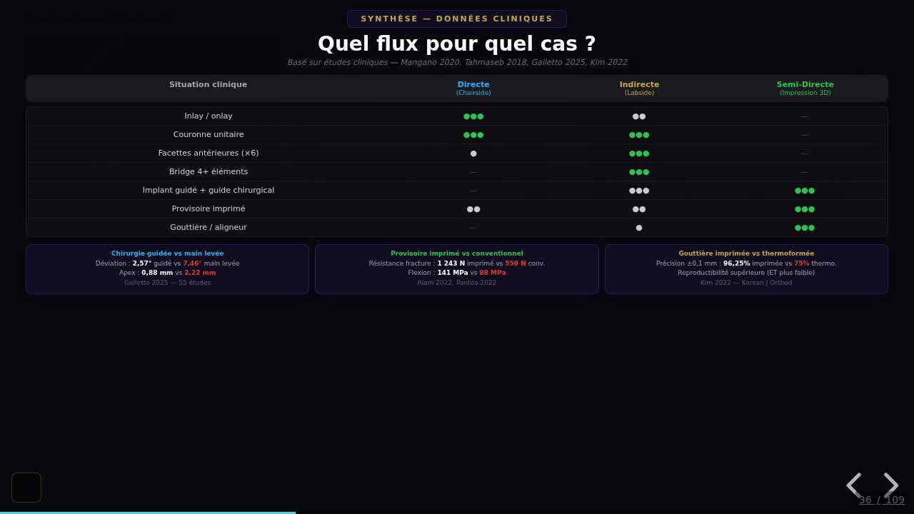
Slide 35 / 109
Le tableau de synthèse. Cette fois avec des données d'études cliniques, pas du marketing.
[LECTURE DU TABLEAU]
Les inlays et onlays : le chairside — CFAO directe — est le cas idéal. Scan, conception, usinage, collage, une seule séance.
Les couronnes unitaires : aussi bien en directe qu'en indirecte. L'équivalence est prouvée — Mangano 2020, pas de différence de survie à 5 ans.
Les facettes antérieures par 6 : là c'est l'indirecte — le labside. La stratification manuelle du céramiste, les caractérisations subtiles. On ne reproduit pas ça au fauteuil. Comme le dit la littérature, il est difficile de s'affranchir de la stratification pour obtenir les effets désirés dans les cas à forte demande esthétique.
Les bridges de 4 éléments ou plus : indirecte exclusivement.
L'implantologie guidée : c'est le flux semi-direct par excellence. Le dentiste planifie, le prothésiste conçoit le guide, l'impression 3D le fabrique. Galletto 2025, méta-analyse de 55 études : la chirurgie pleinement guidée donne une déviation de 2,57 degrés contre 7,46 en main levée. À l'apex, 0,88 mm contre 2,22 mm. C'est 2 à 3 fois plus précis.
Les provisoires imprimés : Alam 2022 — résistance à la fracture de 1 243 newtons pour l'imprimé contre 559 pour le conventionnel. Plus du double. Pantea 2022 confirme : flexion 141 MPa contre 88. L'imprimé est mécaniquement supérieur.
Les gouttières : Kim 2022, Korean Journal of Orthodontics. 96,25% des points dans la tolérance de 0,1 mm pour l'impression directe, contre 75% pour le thermoformage. L'impression est plus précise ET plus reproductible.
[CONCLUSION]
Le bon flux pour le bon cas. Trois outils complémentaires, pas concurrents. La CFAO directe au fauteuil, l'indirecte au labo, la semi-directe en impression 3D. Et souvent, un cas combine les trois.
Si je me perds
Le bon flux pour le bon cas. Directe, indirecte ou semi-directe selon la situation clinique.
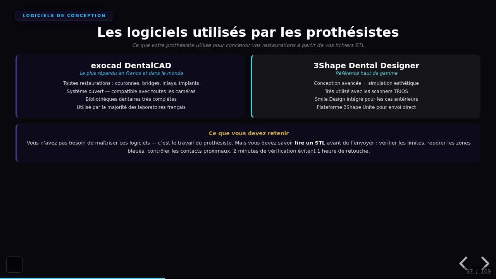
Slide 36 / 109
Les logiciels de CAO.
Je ne vais pas vous faire un comparatif exhaustif — il serait obsolète dans 6 mois.
Ce que je veux vous dire sur les logiciels : apprenez à lire un modèle 3D, même si vous ne concevez pas vous-même.
Pouvoir ouvrir un fichier STL, faire tourner le modèle, voir si les limites sont nettes, vérifier si un contact proximal a l\'air serré ou lâche — c\'est une compétence que n\'importe quel logiciel de visualisation gratuit vous permet d\'acquérir.
Cette compétence vous rend indépendant. Quand votre prothésiste vous envoie une conception pour validation avant usinage, vous pouvez lui donner un feedback clinique pertinent. Pas juste "ça a l\'air bien" — "le point de contact proximal en mésial semble un peu léger, pouvez-vous le renforcer ?"
C\'est une collaboration plus riche. Et des résultats meilleurs.
[LIRE UN STL AVANT D\'ENVOYER — DEUX MINUTES QUI CHANGENT TOUT]
Vous n\'avez pas besoin de savoir concevoir une couronne. C\'est le travail de votre prothésiste.
Mais vous avez besoin de savoir LIRE un modèle 3D. Différence importante.
Lire un STL : ouvrir le fichier dans un visualiseur — MeshLab est gratuit et très complet — et vérifier que la préparation est propre, les limites nettes, pas de trous ni d\'artefacts.
2 minutes. Avant chaque envoi. Ça évite d\'envoyer un modèle mauvais sans le savoir. Et ça évite l\'appel du prothésiste le lendemain matin à 8h30.
Si je me perds
Apprenez à lire un STL avant de l'envoyer. 2 minutes de vérification évitent 1 heure de retouche.
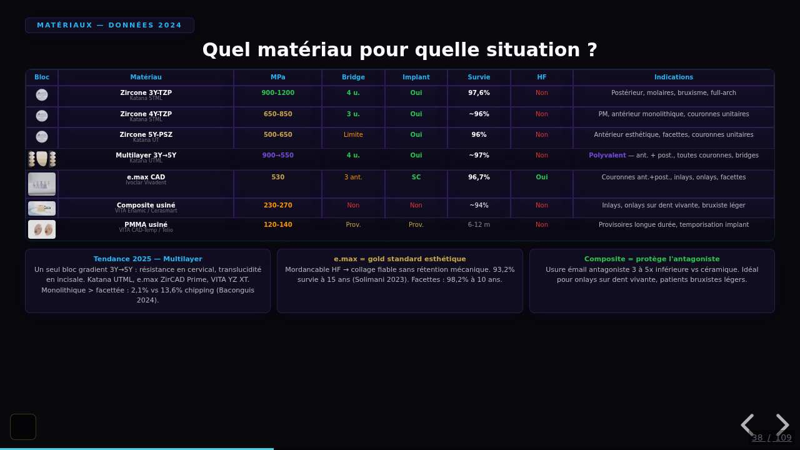
Slide 37 / 109
Les matériaux. Mais avant de regarder le tableau, je veux qu\'on comprenne POURQUOI ces chiffres sont ce qu\'ils sont. Parce que si vous comprenez la physique, vous n\'aurez plus jamais besoin de retenir un tableau par cœur.
[LA ZIRCONE — COMMENÇONS PAR LE DÉBUT]
La zircone pure — ZrO2 — est inutilisable en dentisterie. Elle se détruit toute seule au refroidissement. Quand on la chauffe pour la fritter et qu\'on la refroidit, elle change de phase cristalline — de tétragonale à monoclinique — et cette transformation provoque une expansion de 3 à 5% du volume. Le matériau se fissure de l\'intérieur. Il s\'autodétruit.
La solution : on ajoute de l\'yttrium — de l\'oxyde d\'yttrium, Y2O3. L\'ion yttrium est plus gros que l\'ion zirconium — il s\'insère dans le réseau cristallin et le stabilise. Il empêche la transformation destructrice.
Et la quantité d\'yttrium qu\'on ajoute change TOUT.
[3Y-TZP — 3 mol% d\'yttrium]
Avec 3% d\'yttrium, on obtient une structure cristalline tétragonale MÉTASTABLE à température ambiante. Le mot clé est métastable — la structure veut se transformer, mais l\'yttrium la retient.
Et c\'est là que ça devient élégant. Quand une fissure se propage dans le matériau, le stress mécanique au bout de la fissure est suffisant pour déclencher localement la transformation tétragonale vers monoclinique. L\'expansion de volume de 3 à 5% AU BOUT DE LA FISSURE comprime la fissure et l\'arrête. Le matériau se répare lui-même à l\'endroit précis du dommage.
C\'est ce qu\'on appelle le renforcement par transformation — ou transformation toughening en anglais. C\'est le mécanisme décrit par Garvie, Hannink et Pascoe dans Nature en 1975. C\'est pour ça que la zircone 3Y est le matériau dentaire le plus résistant jamais utilisé : 900 à 1200 MPa.
Mais — et c\'est important — les grains tétragonaux sont biréfringents. Chaque grain diffracte la lumière dans une direction différente. Des millions de joints de grains, des millions de changements d\'indice de réfraction. Résultat : le matériau est opaque. C\'est pas un défaut de fabrication, c\'est de la physique fondamentale.
[5Y-PSZ — 5 mol% d\'yttrium]
Avec 5% d\'yttrium, on stabilise une structure cubique. Le cubique est isotrope — un seul indice de réfraction dans toutes les directions. La lumière passe à travers sans se disperser aux joints de grains. Résultat : le matériau est translucide.
Mais le cubique est stable. Il ne se transforme PAS sous contrainte. On perd le mécanisme de renforcement par transformation. La résistance tombe à 500-650 MPa. C\'est encore 1,5 fois plus que le e.max, mais c\'est la moitié de la 3Y.
Donc 5Y : translucide, esthétique, mais plus fragile. Secteur antérieur, couronnes unitaires, pas de bridge postérieur long.
[4Y — ÇA EXISTE VRAIMENT ?]
Oui et non. 4 mol% d\'yttrium, c\'est une zone de transition sur le diagramme de phases. On obtient environ 50-70% tétragonal et 30-50% cubique. Le renforcement par transformation est partiellement actif. Résistance : 650 à 850 MPa. Translucidité : meilleure que 3Y, moins bonne que 5Y.
C\'est le compromis. Certains fabricants appellent 4Y ce qui est en réalité un bloc multilayer gradient 3Y-5Y. C\'est pas exactement la même chose. Mais cliniquement, les 4Y sont très utilisés pour les prémolaires et les couronnes antérieures monolithiques.
[POURQUOI LA ZIRCONE N\'EST PAS MORDANÇABLE]
L\'acide fluorhydrique dissout la matrice vitreuse — le SiO2 — des céramiques à base de silice. La réaction chimique : SiO2 plus 6 HF donne H2SiF6 plus H2O. L\'acide creuse des micro-rétentions dans la surface en dissolvant le verre entre les cristaux. Ensuite le silane crée un pont chimique Si-O-Si entre la céramique et la résine de collage.
La zircone n\'a PAS de matrice vitreuse. Zéro SiO2. C\'est un oxyde polycristallin pur. L\'acide fluorhydrique n\'a rien à dissoudre. Le silane n\'a rien à quoi se fixer.
La solution : sablage à l\'alumine 50 microns pour créer de la rugosité, puis primer MDP — 10-méthacryloyloxydécyl dihydrogène phosphate. Le groupement phosphate du MDP crée une liaison chimique P-O-Zr directement avec la surface de la zircone. C\'est l\'équivalent de la liaison Si-O-Si sur les vitrocéramiques, mais adapté à un oxyde différent.
[LE MULTILAYER — LA TENDANCE 2025]
Un seul disque avec un gradient d\'yttrium : 3Y en cervical pour la résistance au niveau de la limite, 4Y au milieu, 5Y en incisale pour la translucidité. Le logiciel de CAO positionne la restauration pour que la limite cervicale soit dans la zone forte et le bord incisif dans la zone translucide.
Résultat : monolithique, zéro risque de chipping, esthétique naturelle. Baconguis 2024 : 2,1% de chipping monolithique contre 13,6% pour le facetté à 5 ans. Le débat est clos.
Marques : Katana STML et UTML de Kuraray, e.max ZirCAD Prime d\'Ivoclar, VITA YZ XT Multicolor.
[E.MAX — POURQUOI IL RESTE INCONTOURNABLE]
530 MPa. Moins que la zircone. Mais son avantage décisif : il est mordançable. Acide fluorhydrique 5%, 20 secondes, micro-rétentions, silane, collage résineux fiable. Pas besoin de rétention mécanique. Solimani 2023 : 96,7% de survie à 10 ans, 93,2% à 15 ans. Facettes : 98,2% à 10 ans. C\'est le gold standard esthétique pour les restaurations collées.
[COMPOSITE USINÉ — L\'OUTSIDER INTELLIGENT]
Cerasmart, Grandio Blocs. 230 à 330 MPa. Faible résistance, oui. Mais module d\'élasticité proche de la dentine — 12 à 18 GPa contre 70+ pour la céramique. Il absorbe les chocs au lieu de les transmettre. Et surtout : l\'usure de l\'émail antagoniste est 3 à 5 fois inférieure à la céramique. Pour un onlay sur dent vivante avec un antagoniste naturel que vous voulez protéger, c\'est le bon choix. Et si ça casse, c\'est réparable au fauteuil avec du composite direct.
[QUESTION À LA SALLE]
Avec ces données, quel matériau choisiriez-vous pour une couronne unitaire sur 14, dent vivante, antagoniste naturelle, patiente de 30 ans ? Zircone, e.max, ou composite ?
[LAISSER DÉBATTRE — c\'est une vraie question clinique sans réponse unique]
Si je me perds
Zircone, e.max, composite : chaque matériau a ses indications. Le choix dépend du cas clinique.
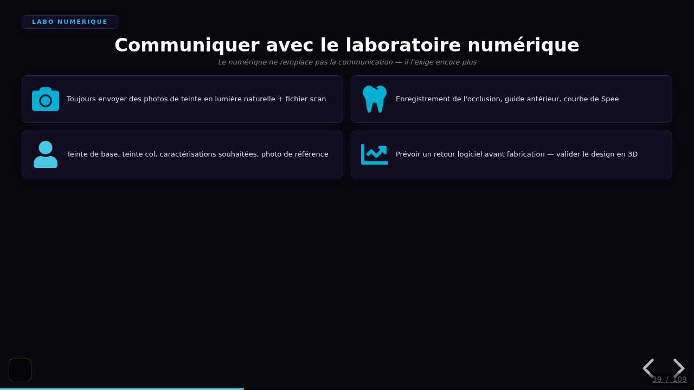
Slide 38 / 109
Le laboratoire numérique et la relation avec votre prothésiste.
Le numérique change la relation praticien-laboratoire. C\'est inévitable. Et ça peut être une source de tension si on ne le gère pas bien.
[QUESTION]
Est-ce que certains d\'entre vous ont eu des frictions avec leur prothésiste lors du passage au numérique ?
[LAISSER RÉPONDRE]
C\'est courant. Votre prothésiste a développé des compétences pendant des années pour rattraper les approximations des empreintes conventionnelles. Le numérique lui enlève une partie de cette marge de manœuvre — et lui en donne de nouvelles.
Mon conseil : impliquez votre prothésiste dès le début. Faites-lui visiter votre cabinet. Montrez-lui votre logiciel. Demandez-lui comment il veut recevoir les fichiers, quelles informations il a besoin au-delà du STL.
Un prothésiste partenaire dans la transition numérique, c\'est un allié précieux. Un prothésiste mis devant le fait accompli, c\'est une source de problèmes.
[TÉMOIGNAGE — 5 minutes]
Comment ma relation avec mon prothésiste a évolué depuis le numérique.
Les 6 premiers mois : tension. Il ne comprenait pas pourquoi les fichiers STL étaient parfois inexploitables. Moi je ne comprenais pas pourquoi il n\'arrivait pas à travailler sur des modèles que je pensais corrects.
On a résolu ça d\'une façon très simple : il est venu passer une matinée au cabinet. Il a regardé comment je scannais. Il m\'a montré sur son écran ce qu\'il voyait quand il ouvrait mes fichiers.
En 3 heures, on a identifié 4 problèmes récurrents dans mes scans que je ne voyais pas parce que je ne savais pas comment il travaillait. Et il a compris pourquoi certaines demandes cliniques lui semblaient impossibles à réaliser.
Je recommande ça à tous les praticiens qui passent au numérique. Invitez votre prothésiste. Une matinée. Ça vaut 6 mois de tensions et d\'incompréhensions.
[QUESTION]
Est-ce que certains d\'entre vous ont déjà fait ça — invité leur prothésiste à observer une séance de scan ?
[LAISSER RÉPONDRE]
[COMMENT ENREGISTRER SON PROTHÉSISTE — CONCRÈTEMENT]
Étape 1 : demandez-lui s\'il reçoit déjà des STL et quel logiciel il utilise.
Étape 2 : faites un cas test ensemble. Couronne simple. Envoyez le STL. Regardez le résultat. Discutez.
Étape 3 : définissez votre protocole d\'envoi. Format du fichier. Infos jointes — note clinique + photo teinte. Délai de retour.
Étape 4 : invitez-le une matinée au cabinet. Je l\'ai dit. Je le répète.
[CONSEIL PRATIQUE]
Certaines caméras ont leur propre plateforme — 3Shape Unite, Medit Link, Dental Wings Connect. Si votre prothésiste est sur la même plateforme : cas envoyés en un clic avec notification automatique. La solution la plus fluide. Sinon : email avec fichier joint. Simple. Ça marche très bien.
Si je me perds
Communiquer avec le labo c'est essentiel. Invitez votre prothésiste une matinée au cabinet.
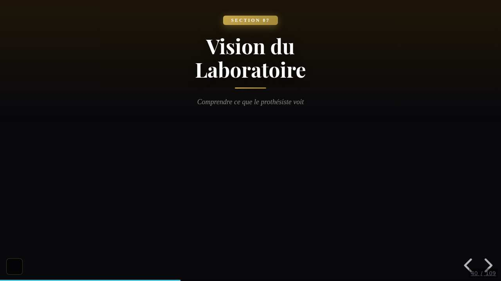
Slide 39 / 109
On change maintenant de perspective. On quitte le fauteuil pour aller au laboratoire. Ce que vous allez voir, ce sont des cas réels — des scans reçus par un prothésiste dans son quotidien. L\'objectif : comprendre ce que le labo voit, ce qu\'il ne peut pas deviner, et comment améliorer vos envois.
Si je me perds
On change de perspective. On passe du fauteuil au laboratoire pour voir ce que le prothésiste voit.
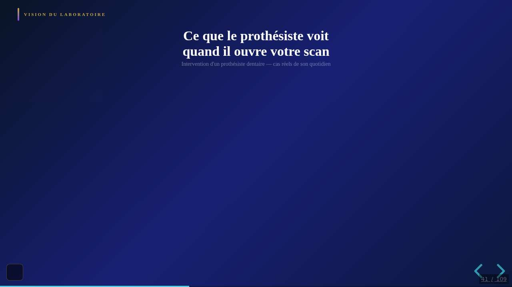
Slide 40 / 109
Le laboratoire travaille uniquement avec ce qu\'on lui transmet. Le prothésiste ne peut pas inventer une limite qui n\'existe pas dans le scan. Et parfois, quelques dixièmes de millimètre invisibles cliniquement deviennent critiques numériquement. Le but n\'est pas simplement de scanner vite. Le but est de transmettre une information exploitable. Pour cette partie, j\'ai demandé à mon prothésiste de me transmettre des cas réels qu\'il reçoit au quotidien. Ce que vous allez voir, ce n\'est pas de la théorie. Ce sont de vrais scans, de vrais problèmes. Et le but n\'est pas de pointer du doigt. Le but est de comprendre ce que le labo voit pour améliorer notre pratique ensemble.
Si je me perds
Le prothésiste ne peut pas inventer une limite qui n'existe pas dans le scan.
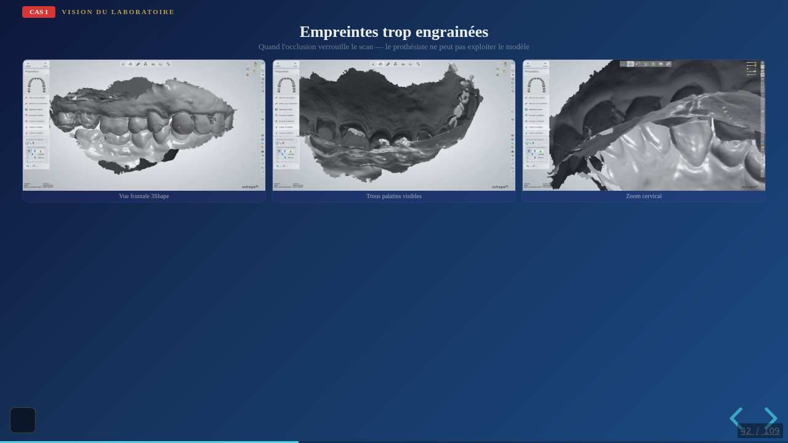
Slide 41 / 109
Voici un scan reçu au laboratoire. Le praticien a scanné les deux arcades en même temps, et le résultat c\'est un modèle "verrouillé" — le prothésiste ne peut pas accéder aux faces internes. C\'est une erreur fréquente, surtout chez les praticiens qui débutent en numérique. La solution est simple : scanner chaque arcade séparément, puis enregistrer l\'occlusion à part.
Si je me perds
Empreintes engrainées : toujours scanner chaque arcade séparément, puis l'occlusion à part.
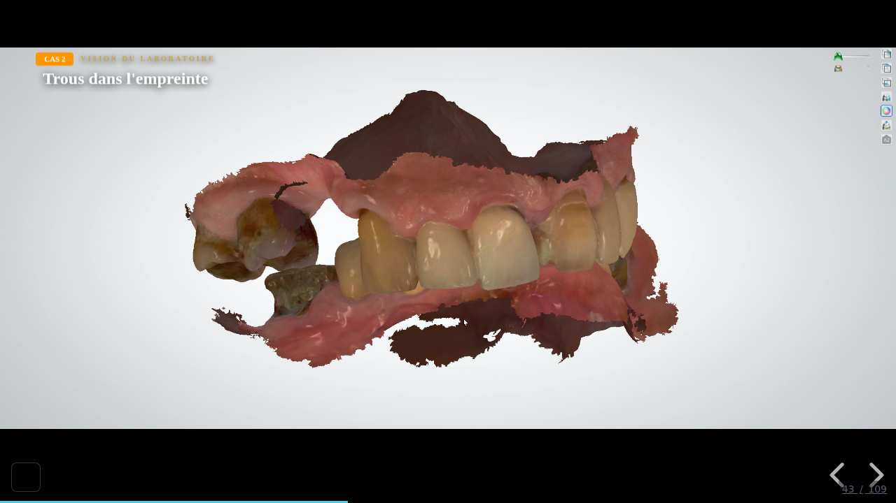
Slide 42 / 109
Ce cas est très fréquent en prothèse amovible. Le praticien a scanné les dents, mais il n\'a pas scanné la gencive linguale. Or pour un stellite, le prothésiste a besoin de TOUT — les crêtes, les zones d\'appui, le relief gingival complet. Si ça manque, il ne peut tout simplement pas travailler. La solution : prenez l\'habitude de tourner votre modèle 3D à 360° avant de l\'envoyer. Si vous voyez des trous, rescannez.
Si je me perds
Les trous dans le scan : tourner le modèle 3D à 360° avant d'envoyer. Si vous voyez un trou, rescannez.
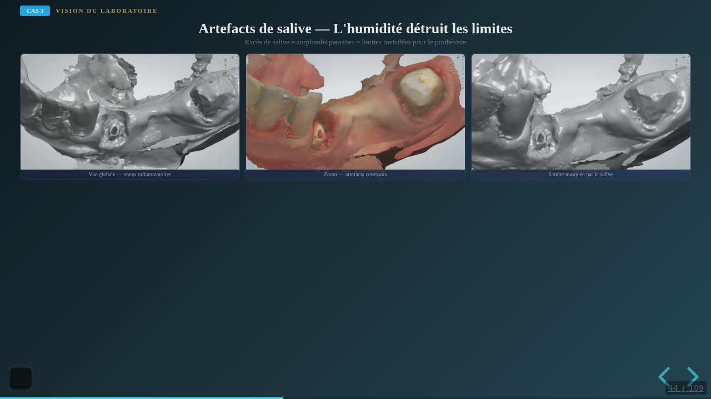
Slide 43 / 109
Regardez ces irrégularités au niveau cervical. Ce ne sont pas des tissus biologiques — ce sont des artefacts créés par la salive. Le scanner a capturé le film de salive COMME SI c\'était de la gencive. Et le prothésiste ne peut plus savoir où se situe la vraie limite. La solution est simple mais exigeante : aspiration continue, séchage systématique, et ne jamais scanner une zone humide.
Si je me perds
La salive crée des artefacts. Le scanner capture tout, y compris le film de salive.
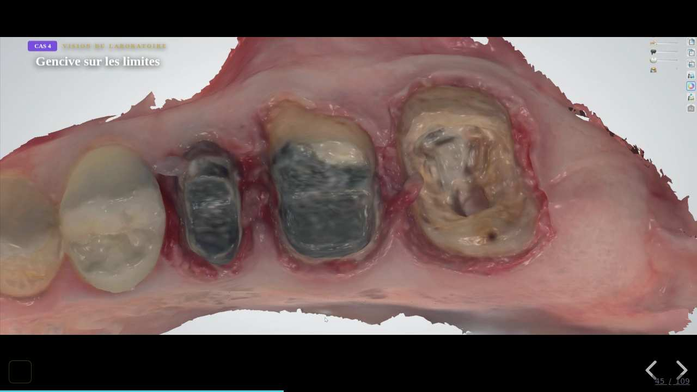
Slide 44 / 109
C\'est probablement l\'erreur la plus fréquente et la plus impactante. La gencive recouvre la limite, et le prothésiste se retrouve à deviner. Ce n\'est pas acceptable. La solution, c\'est tout ce qu\'on a vu dans la section gestion tissulaire : cordon, hémostatique, rétraction. Si vous ne pouvez pas exposer la limite, ne scannez pas. Temporisez, conditionnez les tissus avec un provisoire, et revenez quand les conditions sont réunies.
Si je me perds
Gencive qui recouvre la limite : rétracter avant de scanner. Sinon le prothésiste devine.
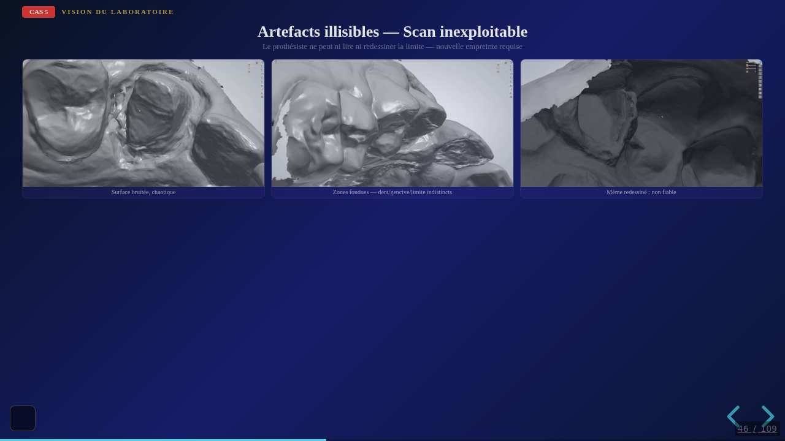
Slide 45 / 109
Ce cas est un cas de refus au laboratoire. Le prothésiste ne peut rien faire avec ça. Il ne peut pas lire la limite, et il ne peut même pas la redessiner manuellement de manière fiable. Ce scan doit être refait. Et la bonne nouvelle, c\'est que c\'est évitable : vérifiez vos limites dans le logiciel avant d\'envoyer. Zoomez. Tournez. Si vous voyez des artefacts — rescannez immédiatement. C\'est 2 minutes de plus au fauteuil, mais ça évite un retour labo garanti.
Si je me perds
Scan inexploitable : vérifier les limites dans le logiciel avant d'envoyer. 2 minutes de plus.
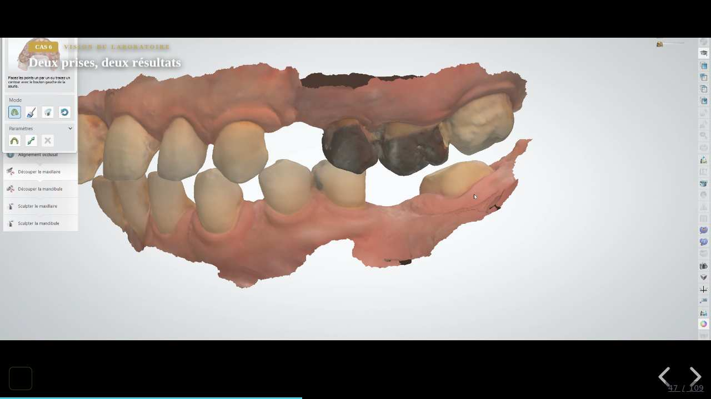
Slide 46 / 109
Ce cas est très révélateur. Le prothésiste a superposé les deux empreintes et il voit des différences significatives. Même zone, même patient, mais deux résultats différents. Qu\'est-ce que ça veut dire ? Ça veut dire que le problème n\'est pas la caméra — c\'est l\'environnement. Les tissus ont bougé, saigné, ou changé entre les deux prises. La vraie solution, ce n\'est pas de rescanner — c\'est de stabiliser les tissus avant de scanner la première fois.
Si je me perds
Deux prises différentes du même patient : le problème n'est pas la caméra, c'est les tissus.
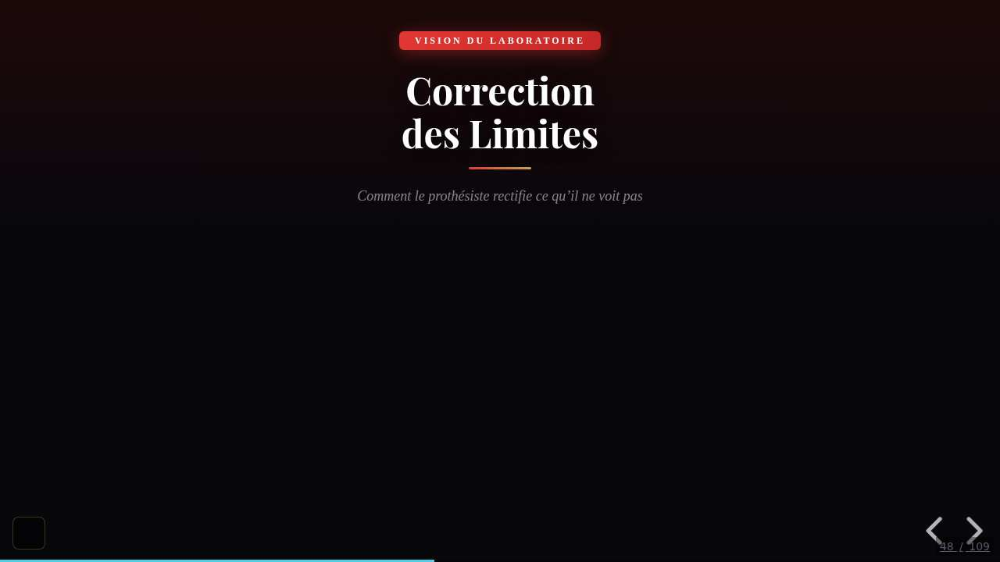
Slide 47 / 109
On va maintenant voir quelque chose de très révélateur. Le prothésiste va vous montrer comment il rectifie les limites quand elles ne sont pas visibles dans le scan. Chaque trait qu'il trace est une estimation — pas une certitude. Regardez bien.
Si je me perds
Quand le prothésiste rectifie une limite, il suppose. Chaque supposition est une perte de précision.
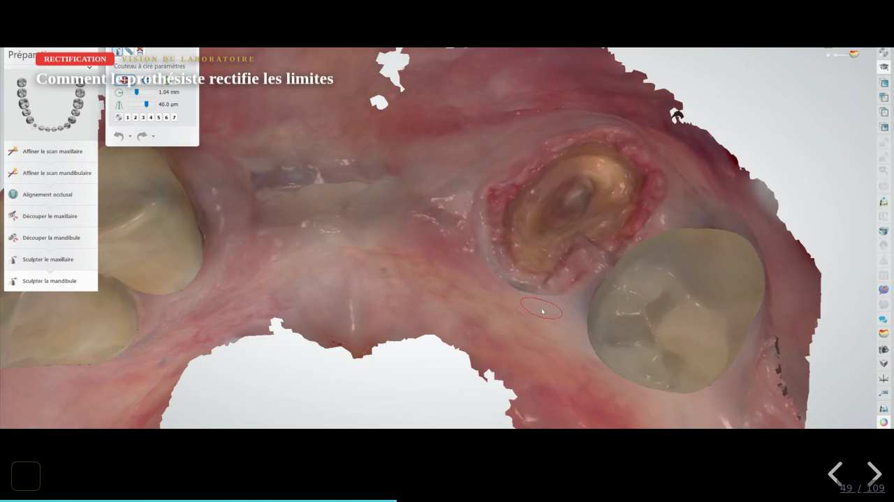
Slide 48 / 109
Regardez ce que fait le prothésiste quand la limite n\'est pas visible. Il rectifie. Il redessine. Il suppose. Chaque trait qu\'il trace est une estimation, pas une certitude. Il ne voit pas la limite réelle — il la devine à partir du contexte. Et chaque supposition introduit une marge d\'erreur qui se répercute sur l\'adaptation finale de la prothèse.
Si je me perds
Le prothésiste devine la limite. Il ne la voit pas. La qualité se joue au fauteuil.
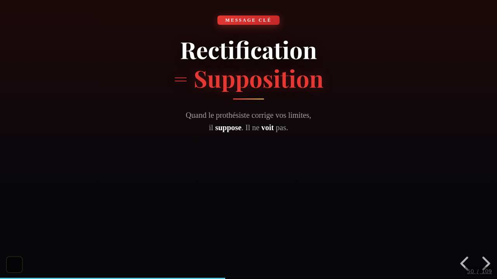
Slide 49 / 109
C\'est le message le plus important de toute cette section. Quand le prothésiste rectifie une limite qu\'il ne voit pas clairement, il suppose. Il fait de son mieux — mais c\'est une estimation. Et chaque estimation introduit une erreur. La qualité finale de votre prothèse se joue au moment du scan, pas au laboratoire. Le prothésiste ne peut pas compenser un scan insuffisant. La précision se gagne au fauteuil.
Si je me perds
Rectification égale supposition. La précision se gagne au fauteuil, pas au laboratoire.
Slide 50 / 109
Six problèmes. Six solutions. Aucune n\'est compliquée. Mais toutes exigent de la rigueur et de la méthode. Le numérique est extrêmement précis... mais il est aussi extrêmement exigeant.
Si je me perds
Six problèmes, six solutions. Aucune n'est compliquée. Toutes exigent de la rigueur.
Slide 51 / 109
Je vous propose cette checklist simple. 7 points. 60 secondes. Avant chaque envoi au labo, parcourez cette liste. Si un seul point n\'est pas validé, corrigez-le AVANT d\'envoyer. C\'est la différence entre un cas qui revient parfait et un cas qui revient en retouche.
Si je me perds
Checklist avant envoi : 7 vérifications en 60 secondes. Un point non validé = un retour labo.
Slide 52 / 109
Je terminerai cette section avec un message que je crois essentiel. Nous ne sommes pas deux métiers séparés. Nous sommes une seule équipe, au service du même patient. Quand je comprends les difficultés de mon prothésiste, je fais de meilleurs scans. Quand il comprend mes contraintes cliniques, il fait de meilleures conceptions. Le numérique nous rapproche, à condition qu\'on communique.
Si je me perds
Le praticien et le laboratoire forment une seule équipe au service du même patient.
Slide 53 / 109
Section 8 — Les erreurs.
Ma partie préférée. Parce que c\'est la plus utile.
Dans les formations dentaires officielles — et j\'ai passé beaucoup de temps en formation — on ne parle presque jamais des erreurs. On présente les beaux cas. Les résultats parfaits. Les photos cliniques impeccables.
[PAUSE]
Personne ne présente le bridge qu\'il a fallu refaire. Personne ne montre le scan approximatif qu\'on a quand même envoyé parce qu\'on était pressé.
Je vais vous montrer les miennes. Parce que je pense que c\'est beaucoup plus utile que de vous montrer mes meilleures photos.
[MOMENT DE TRANSPARENCE — 3 minutes]
Je vais vous dire quelque chose que la plupart des formateurs ne disent jamais.
J\'ai eu des cas ratés en numérique. Des bridges à refaire. Des empreintes invalides. Des nuits à me demander si j\'avais bien fait de me lancer là-dedans.
Pas souvent. Mais ça m\'est arrivé.
Et à chaque fois, en remontant la chaîne, j\'ai trouvé l\'erreur. Dans 100% des cas. Ce n\'était jamais la caméra. C\'était toujours le protocole — le mien.
C\'est pour ça que cette section sur les erreurs est la plus importante de toute la formation. Pas pour vous faire peur. Pour que quand ça vous arrivera — parce que ça arrivera — vous sachiez exactement où chercher.
Si je me perds
80% des erreurs viennent du terrain gingival. 3 minutes de gestion tissulaire = 20 minutes gagnées.
Slide 54 / 109
4 erreurs de scan. Pas 10, pas 20 — quatre. Et elles génèrent à elles seules la quasi-totalité des retours labo et des retouches à la pose.
[INTERACTION]
Je vais les nommer une par une. Levez la main si vous l'avez déjà faite. Honnêtement.
Champ non préparé — qui a déjà scanné sur une gencive qui saignait ? [PAUSE]
Geste aléatoire — qui a scanné sans suivre un chemin précis ? [PAUSE]
Isolation négligée — qui a validé un scan avec de la buée ou de la salive ? [PAUSE]
Validation sans contrôle — qui a envoyé un STL sans vérifier les zones bleues ? [PAUSE]
Merci pour l'honnêteté. On est tous passés par là. Et remarquez : 3 de ces 4 erreurs concernent le terrain gingival. C'est pour ça que la gestion des tissus est la clé de tout.
Si je me perds
La gestion des tissus c'est LA partie qui change tout au fauteuil.
Slide 55 / 109
On va illustrer une erreur concrète avec un cas réel. Reda M., 47 ans. Inlay-clavette sur la 26, zircone. Et un problème que vous rencontrerez tôt ou tard si vous faites des inlay-cores ou des couronnes sur implants adjacents.
[MONTRER LES PHOTOS]
Les scan posts de 26 et 27 sont trop proches. Regardez — ils s'entrelacent. Le logiciel voit deux tiges qui se chevauchent et il ne peut pas reconnaître la géométrie individuelle de chacune. Résultat : empreinte déformée, inlay-core qui ne s'insère pas.
[PAUSE]
Et c'est exactement le même problème avec les scanbodies sur implants adjacents. Si deux scanbodies sont trop proches — par exemple en 36-37 — le principe est identique. Le logiciel confond les deux.
La solution est simple mais il faut y penser : le mode entrelacé. Vous scannez le premier scan post seul. Vous validez. Vous le retirez, vous posez le deuxième. Vous scannez. Le logiciel fusionne automatiquement les deux prises.
Dans Panda, c'est une case à cocher : « Tige de balayage entrelacée / interférente ». D'autres systèmes ont un équivalent.
C'est une erreur qu'on fait UNE FOIS. Après, on n'oublie plus.
Si je me perds
Cas Reda : scan posts entrelacés. Scanner séparément, le logiciel fusionne. On fait cette erreur une fois.
Slide 56 / 109
Et voilà le résultat après correction. À gauche, l'interface Panda avec la case « tige entrelacée » cochée. Au centre, le modèle 3D avec les deux scan posts correctement matchés — vous voyez les deux axes parallèles bien identifiés. À droite, le modèle fusionné complet.
[PAUSE]
Le message : que ce soit des scan posts pour inlay-cores, des scanbodies pour implants, ou n'importe quel élément qui chevauche son voisin — la règle est la même. Scanner séparément, laisser le logiciel fusionner.
C'est une erreur typique de débutant. On la fait une fois, on perd un inlay-core. On ne la refait plus jamais.
Si je me perds
Mode entrelacé : scanner un scan post à la fois. Le logiciel fusionne automatiquement.
Slide 57 / 109
Regardez cette image. Prenez le temps de la regarder.
[PAUSE LONGUE — 5 secondes minimum, laisser l'image parler]
C'est une capture d'une vidéo que m'a envoyée mon prothésiste. Lui, quand il reçoit ça, il me dit : « Karim, la gencive recouvre les limites, je ne peux pas concevoir la couronne. » C'est normal. C'est son métier. Il regarde les limites.
[CLIC — "Le prothésiste voit"]
Mais moi, quand j'ai vu cette image, j'ai eu un choc. Parce que je ne vois pas la même chose que lui.
[CLIC — "Moi je vois"]
[PAUSE]
Moi je vois des papilles qui n'existent plus. Une gencive marginale qui a été arrachée par la préparation. Des tissus qui ne reviendront probablement jamais à leur position initiale.
Et je me suis dit : ce confrère — qui est sûrement compétent, qui a sûrement bien taillé sa préparation — il a pensé prothèse. Il a pensé « comment voir ma limite ». Il a pensé « comment ouvrir pour que mon prothésiste puisse travailler ».
Mais il n'a pas pensé phénotype. Il n'a pas pensé biologie. Il n'a pas pensé à ce que cette gencive allait devenir dans 6 mois, dans un an, dans 5 ans.
[PAUSE]
Et c'est exactement ça le sujet de ce qui suit. Parce que si on ne comprend pas les tissus qu'on manipule, on finit par les détruire en voulant bien faire. Et ça, c'est le piège le plus courant en dentisterie numérique.
Si je me perds
Cette photo montre une préparation traumatique. Le prothésiste voit les limites masquées. Moi je vois des papilles détruites.
Slide 58 / 109
80% des erreurs que je viens de vous montrer ont un point commun. [PAUSE] Le terrain gingival.
Et 3 minutes de gestion tissulaire avant le scan = 20 minutes économisées en retouche à la pose.
[PAUSE]
Je vais vous raconter mon parcours. Comment j'ai appris — à force d'erreurs — à gérer ces tissus. Ce que j'ai essayé, ce qui n'a pas marché, ce qui a marché, et ce que je fais aujourd'hui.
C'est ma partie préférée de toute la formation.
Si je me perds
80% des erreurs viennent du terrain gingival. La solution c'est maîtriser les tissus.
Slide 59 / 109
Section 4 — La gestion des tissus.
C\'est ma partie préférée de toute la formation. Et c\'est la partie que vous allez trouver la plus utile dès demain matin.
[SONDAGE]
Main levée : qui a déjà eu un bridge à refaire partiellement à cause d\'un problème d\'empreinte — optique ou conventionnelle — lié à la gencive ?
[PAUSE]
Voilà. Et je parie que pour la plupart d\'entre vous, la cause n\'était pas la caméra. C\'était la gencive.
Je vais vous dire quelque chose qui peut paraître brutal : dans 80% des cas que j\'ai vus rater — les miens et ceux de confrères — la cause était en amont du scan. Le terrain n\'était pas prêt.
Le numérique n\'a pas changé l\'anatomie. La gencive saigne toujours autant. L\'humidité est toujours un problème. Ce qui a changé, c\'est que le numérique révèle ces problèmes de façon beaucoup plus visible — et beaucoup moins forgiving que le conventionnel.
Si je me perds
Le numérique ne pardonne pas les tissus instables. C'est une dentisterie du propre.
Slide 60 / 109
Alors là, je vais vous raconter quelque chose qui m'a pris du temps à comprendre. Et quand je dis du temps, je parle de plusieurs mois de frustration.
Au début de mon passage au numérique, je faisais mes préparations. Cliniquement, ça me semblait correct. J'étais plutôt satisfait de mon travail. Mais quand je regardais le STL sur l'écran, les limites étaient floues. Bruitées. Mon prothésiste m'appelait et me disait : « Karim, je ne vois rien. Je ne peux pas travailler avec ça. »
[PAUSE]
Qui a déjà vécu ça dans la salle ? Vous faites votre préparation, vous êtes content de votre travail clinique, vous scannez, et quand vous ouvrez le fichier STL, c'est inexploitable. Les limites sont noyées dans du bruit numérique.
[PAUSE]
Et un jour, j'ai compris un truc fondamental. Le scanner ne fait qu'enregistrer ce qui est là. Il ne fait pas mieux, il ne fait pas pire. Il photographie la réalité avec une précision redoutable. Et c'est justement là le problème. Si vos tissus sont inflammatoires, humides, instables, si le sang suinte dans le sulcus, si la gencive recouvre votre limite, le STL sera mauvais. Ce n'est pas un problème de scanner, ce n'est pas un problème de logiciel. C'est un problème de tissus.
[CLIC] Et c'est là que cette phrase prend tout son sens. Le numérique, c'est une dentisterie de précision. Mais c'est surtout une dentisterie du propre. Si vous ne retenez qu'une chose de cette section sur les tissus mous, retenez celle-là. Le propre avant le précis.
Si je me perds
Ma première erreur : croire au produit miracle. Hémostase ne veut pas dire lisibilité numérique.
Slide 61 / 109
Donc premier réflexe quand j'ai eu ce problème de STL inexploitables. J'ai fait comme tout le monde. Les pâtes de rétraction. Vous connaissez tous. On nous les présente dans les congrès, les délégués nous en laissent des échantillons, et sur le papier c'est parfait : hémostase, ouverture du sulcus, c'est simple, c'est rapide. On se dit : « Problème réglé. »
[CLIC] Regardez cette première photo. La pâte est mal éliminée. Résultat : la limite est complètement invisible sur le STL. [CLIC] Deuxième photo : la pâte s'est mélangée au sang. Coloration noire sur toute la zone cervicale. [CLIC] Et troisième photo : l'aspect noir sur la limite. La lecture optique est compromise. Le scanner ne peut pas distinguer la dent de la pâte résiduelle.
[PAUSE]
Sauf que mon prothésiste, et je suis sûr que certains d'entre vous ont le même genre de prothésiste, il me rappelait à chaque fois : « Karim, je ne vois pas les limites. » Régulièrement. Avec une patience qui forçait le respect, je dois dire.
Et c'est là que j'ai compris un truc important. Hémostase ne veut pas dire lisibilité numérique. Ce sont deux choses complètement différentes. La pâte arrête le sang, oui. Mais elle se mélange à lui. Elle colore les tissus. Elle laisse des résidus que votre scanner ne sait pas interpréter. Et vous vous retrouvez avec un fichier où personne ne peut travailler.
[PAUSE]
C'est là que j'ai compris qu'il fallait changer d'approche. Protéger les tissus avant de préparer. Travailler sous grossissement. Et surtout, adapter ma technique au patient que j'ai devant moi, pas appliquer un protocole unique pour tout le monde.
Si je me perds
Cas Omar : le sang s'arrête mais l'empreinte n'est pas réussie. Le profil d'émergence est déformé.
Slide 62 / 109
Le cas Omar. Celui-là, il m'a vacciné. Et je vais vous expliquer pourquoi.
Regardez la première photo. Saignement en nappe, zone mésio-palatine. Carie sous-gingivale au plancher. Et la limite prothétique tombe pile dans la zone qui saigne. C'est le scénario que personne ne veut voir en empreinte optique.
Qui a déjà eu ce scénario ? [PAUSE] Tout le monde, évidemment. C'est la situation classique qui nous met en difficulté.
Alors je mets la pâte astringente Voco. Le sang s'arrête. Et là, la tentation. On se dit : c'est bon, c'est sec, je scanne.
Qui a déjà fait ça ? [PAUSE] Moi aussi. Et c'est L'ERREUR.
[PAUSE]
Pourquoi ? Parce que l'hémostase, ce n'est PAS la gestion tissulaire. Le sang s'arrête, oui. Mais le profil d'émergence est toujours déformé. Le bourgeon gingival est toujours là, celui qui a proliféré à cause de la carie chronique. Il masque la limite cervicale. Et le piège, c'est que le scanner va lire cette surface parfaitement. Aucune alerte. Le logiciel ne dit rien. Mais ce qu'il lit, c'est un artéfact tissulaire. Pas la réalité anatomique.
[PAUSE]
Donc j'ai pris le laser SOGA. 980 nanomètres, 1,5 watts, mode continu. Pas pour couper. Pour remodeler. Le laser vaporise le bourgeon excédentaire. Il recrée un profil d'émergence physiologique. Et il coagule en même temps. C'est un outil extraordinaire quand on le dose correctement.
Mais attention, deuxième leçon du jour. Si vous insistez trop, vous carbonisez. Gencive noire. Et une gencive carbonisée, le scanner ne sait pas la lire. Surface irrégulière, contraste optique perdu. Dans ce cas-là, une seule option intelligente : temporisation. Provisoire PMMA ou composite direct. On revient dans 48 à 72 heures. Ce n'est pas un échec. C'est de la rigueur.
Le laser, c'est du remodelage. Pas juste de l'hémostase. Dosez. Et si vous avez trop dosé, temporisez. Ne scannez jamais une gencive carbonisée.
Si je me perds
Laser pour remodeler, pas juste pour couper. Si gencive carbonisée : temporiser 48-72h.
Slide 63 / 109
On récapitule le protocole complet du cas Omar. Et je veux que ce soit clair pour tout le monde, parce que c'est un arbre décisionnel que vous allez pouvoir utiliser demain matin.
[PAUSE]
Étape 1, le diagnostic. Le sang coule. Mais le vrai problème, ce n'est pas le saignement. C'est le bourgeon. La gencive a proliféré autour de la carie sous-gingivale. Elle déforme le profil d'émergence. Même si vous stoppez le sang, la forme gingivale est fausse. Le scanner va enregistrer une anatomie qui n'est pas la bonne.
Étape 2, le laser SOGA. 980 nanomètres, 1,5 watts, continu, fibre PF4. On ne coupe pas. On remodèle. On vaporise l'excès tissulaire. On retrouve la forme anatomique du sulcus. C'est un geste précis, contrôlé, qui demande de la pratique.
Étape 3, et c'est là que tout se joue. Après le laser, vous regardez la gencive. Rose, propre, profil correct ? Vous enchaînez pâte astringente et scan. Moins de 90 secondes. C'est ce qui s'est passé avec Omar. Le résultat : couronne zircone, zéro retouche, ajustage parfait.
Mais si c'est noir, carbonisé, on s'arrête. [PAUSE] On ne scanne pas. Le logiciel ne vous dira rien, le scan sera techniquement réussi. Mais le modèle 3D sera faux. Et la couronne ne passera pas. Vous allez perdre du temps, le labo va perdre du temps, et le patient va revenir pour rien. Dans ce cas, provisoire PMMA ou composite direct. On revient dans 48 à 72 heures. La gencive cicatrise, le profil se stabilise. Et là, votre empreinte sera fiable.
[PAUSE]
Ce qu'il faut retenir : l'hémostase seule ne suffit pas. C'est le profil d'émergence qui compte. Le laser remodèle, pas juste coagule. Et si vous carbonisez, temporisez. Ce n'est pas un échec, c'est de la rigueur.
Et ça m'a fait réfléchir. Le laser, c'est bien quand on n'a pas le choix. Quand il y a un bourgeon gingival, une prolifération tissulaire, parfois c'est la seule option. Mais est-ce qu'on pourrait éviter d'en arriver là ? Est-ce qu'on pourrait protéger les tissus en amont, au lieu de les remodeler après ? C'est ce qui m'a amené à m'intéresser à la préservation tissulaire.
Si je me perds
La préservation tissulaire c'est le chaînon manquant entre préparation et esthétique.
Slide 64 / 109
Alors j'ai commencé à creuser. Et j'ai découvert quelque chose que personne ne m'avait appris en fac. La préservation tissulaire. Le chaînon manquant entre préparation, empreinte et esthétique.
Quand on prépare une couronne, on se concentre sur la dent. Réduction suffisante, axe d'insertion, espace prothétique, visibilité de la limite. C'est ce qu'on nous enseigne. Pourtant, il existe un élément tout aussi important, et on en parle beaucoup moins. Les tissus mous qui entourent cette dent. La gencive marginale n'est pas un obstacle à contourner. C'est un tissu biologique vivant que nous devons préserver.
[PAUSE]
Trop souvent, quand une limite est difficile à visualiser, la tentation est grande de descendre davantage avec la fraise. On obtient une limite visible. Mais parfois au prix d'un capital tissulaire qui ne reviendra jamais totalement.
[CLIC] La question n'est pas : la gencive va-t-elle cicatriser ? Bien sûr qu'elle va cicatriser. La vraie question est : va-t-elle cicatriser exactement à sa position initiale ? Et c'est là toute la différence. Une gencive traumatisée peut cicatriser. Mais elle peut aussi s'amincir, migrer apicalement, perdre sa stabilité. Évoluer vers une récession. Parfois des mois, voire des années après la préparation initiale.
[CLIC] Et les études le confirment. Orkin et collaborateurs, 1987. Comparaison limites supra-gingivales versus sous-gingivales. Résultat : 2,42 fois plus de saignement gingival et 2,65 fois plus de récessions gingivales autour des restaurations sous-gingivales. Bader et collaborateurs, 1991, une étude sur 831 patients suivis sur le long terme. Davantage d'inflammation, davantage de profondeur de sondage, davantage de complications parodontales avec les limites sous-gingivales. Et Reitemeier, dans une revue systématique, confirme que les limites proches des tissus mous présentent davantage de complications parodontales lorsqu'elles sont mal contrôlées.
Ces études ne signifient pas qu'il faut bannir les limites sous-gingivales. Elles nous rappellent simplement une réalité biologique.
[CLIC] Chaque fois que nous descendons sous la gencive, nous augmentons notre responsabilité biologique.
[PAUSE]
Plus nous descendons, plus nous devons être rigoureux. Plus nous devons maîtriser notre geste. Et plus nous devons comprendre les tissus que nous manipulons.
Si je me perds
Orkin 1987 : 2,42 fois plus de récessions autour des limites sous-gingivales.
Slide 65 / 109
Et c'est là que j'ai eu le déclic. Tous les patients ne réagissent pas de la même manière. Le même protocole, la même fraise, la même attention, et deux résultats complètement différents. Pourquoi ? Le phénotype parodontal.
Nous ne préparons pas seulement une dent. Nous préparons une dent appartenant à un phénotype parodontal donné. Et ce phénotype va dicter toute notre stratégie de préparation. Classification de Jepsen, Caton, Albandar et collaborateurs, 2018, World Workshop on the Classification of Periodontal and Peri-Implant Diseases, Journal of Periodontology.
[CLIC] Le phénotype fin et festonné. Gencive fine, feston marqué, dents triangulaires, papilles longues et étroites, corticales vestibulaires souvent fines. C'est le patient à haut risque. Chez lui, les récessions sont fréquentes. Les traumatismes sont moins bien tolérés. Les préparations agressives sont souvent sanctionnées biologiquement. Chez ces patients, chaque micron de tissu préservé a de la valeur. On peut presque dire : le meilleur tissu est celui que nous n'avons pas eu besoin de blesser.
[CLIC] Le phénotype épais et festonné. Intermédiaire. Bonne résilience tissulaire, mais il faut quand même surveiller l'inflammation. Ne pas se laisser endormir par la résistance apparente du tissu.
[CLIC] Le phénotype épais et plat. Gencive épaisse, fibreuse, feston peu marqué, dents plus carrées. Ces patients tolèrent mieux les préparations sous-gingivales, les chirurgies, les traumatismes mécaniques. Par contre, et c'est important, ils font davantage de poches. Davantage d'hyperplasie. Davantage d'épaississement inflammatoire. Le phénotype épais pardonne davantage nos erreurs. Mais il ne doit pas devenir une excuse pour être moins respectueux des tissus.
[CLIC] La meilleure préparation n'est pas celle que nous réalisons. C'est celle que le phénotype du patient est capable de supporter durablement. Retenez cette phrase.
Si je me perds
Tous les patients ne réagissent pas pareil. Le phénotype dicte toute la stratégie de préparation.
Slide 66 / 109
D'accord, donc le phénotype change tout. Mais comment on l'identifie au fauteuil ? Est-ce qu'il faut des examens complexes, un CBCT, une mesure au pied à coulisse ? Non. C'est simple, rapide, et ça devrait devenir un réflexe.
Le test de transparence. Vous insérez votre sonde parodontale dans le sulcus. Si vous voyez la sonde à travers la gencive, comme sur cette photo, c'est un phénotype fin. La gencive est tellement fine que la sonde transparaît. Si la sonde est invisible, c'est un phénotype épais. La gencive est suffisamment épaisse pour masquer l'instrument.
[CLIC] C'est un geste de 5 secondes. 5 secondes. Et il change toute votre stratégie de rétraction. Tout votre protocole en découle. Ce geste devrait devenir un réflexe, avant chaque préparation prothétique, au même titre que vous vérifiez l'occlusion ou la vitalité.
Qui fait déjà ce test systématiquement ? Levez la main.
[PAUSE]
Si vous ne le faites pas encore, commencez dès lundi. Sonde paro dans le sulcus, regard attentif. 5 secondes qui vont changer votre approche. On voit juste après quel protocole choisir en fonction du résultat.
Si je me perds
Test de transparence : sonde visible = phénotype fin. Sonde invisible = phénotype épais. 5 secondes.
Slide 67 / 109
Là on entre dans le vif du sujet. Le biotype gingival et ce que ça change concrètement dans votre protocole de rétraction.
Qui ici applique le même protocole de rétraction à tous ses patients ? Cordon imprégné systématique, quel que soit le patient ?
[PAUSE]
C'est ce que je faisais. Et c'est mon erreur numéro un. Parce que deux patients avec un paro stabilisé, même protocole, résultats complètement différents. L'un nickel, l'autre en sang. Et pendant longtemps, je ne comprenais pas pourquoi.
La réponse, c'est le biotype. Et là j'ai deux chiffres importants pour vous.
El Ashry, 2025, essai clinique randomisé publié dans le Journal of Dentistry. Le cordon imprégné donne le meilleur déplacement, 0,66 millimètres. Mais c'est aussi lui qui provoque la plus forte perte de hauteur gingivale à un mois. En gros, il ouvre bien mais il traumatise.
[CLIC] Chauhan 2025, une revue dans PMC sur la gestion des tissus mous, nous donne les seuils critiques. L'épithélium d'attache commence à souffrir à 1 newton par millimètre. Il se rompt à 2,5. Et le minimum d'ouverture sulculaire pour que votre scan soit lisible, c'est 0,2 millimètre. Pas plus. On n'a pas besoin d'ouvrir énormément. On a besoin d'ouvrir juste assez.
[PAUSE]
Donc voilà ce que je fais maintenant. Biotype fin, stable, pas inflammatoire : PTFE seul. Le téflon, ça suffit. Ouverture douce, pas de trauma, la gencive ne bouge pas après. Biotype épais, instable, qui rebondit : cordon fin plus PTFE par-dessus. La combinaison stabilise mécaniquement et contrôle le rebond.
[CLIC] La règle : identifiez le biotype avant de choisir votre technique. Pas l'inverse. C'est le biotype qui dicte le protocole.
Si je me perds
Biotype fin = PTFE seul. Biotype épais instable = cordon + PTFE. Identifiez avant de choisir.
Slide 68 / 109
[Laisser la vidéo démarrer, ne pas parler pendant les 10 premières secondes]
Le fil rétracteur. L'outil le plus vieux, le moins cher, et probablement le plus mal utilisé en dentisterie prothétique. Sérieusement. On a tous appris à poser un cordon en fac. Mais entre ce qu'on nous a appris et ce qui fonctionne vraiment en numérique, il y a un monde.
Je vais vous montrer la technique double fil. C'est celle que j'utilise quand le biotype épais nécessite une rétraction mécanique franche.
Premier fil : numéro 000, le plus fin. Vous le posez doucement dans le sulcus. Il déplace légèrement la gencive et il assèche. Vous le laissez 1 à 2 minutes. Deuxième fil : numéro 00 ou 0, ça dépend de l'épaisseur du sulcus. Par-dessus le premier. Là, vous amplifiez le déplacement pour exposer la limite cervicale.
[PAUSE]
Maintenant, attention. Le timing, c'est TOUT. [CLIC] Vous retirez le deuxième fil. Vous avez 90 secondes. Pas 2 minutes. Pas « environ une minute et demie ». 90 secondes pour scanner la zone critique. Après, la gencive revient et c'est fini.
Je vais vous raconter mon expérience de mes débuts. Je retirais le fil. Je le posais sur le plateau. Je prenais la caméra. Je la positionnais. Je demandais à l'assistante d'aspirer. Et c'était trop tard. Ma fenêtre était fermée. La gencive avait déjà rebondi.
[PAUSE]
[CLIC] Maintenant, voilà comment je fais. Caméra en main avant de retirer le fil. Aspiration en place. Le patient est positionné. Vous retirez. Vous scannez. Dans cet ordre. Pas autrement. C'est comme le chirurgien qui prépare tous ses instruments avant d'inciser. Pas pendant l'intervention.
Si je me perds
Le fil rétracteur : caméra en main AVANT de retirer. 90 secondes pour scanner. Pas une de plus.
Slide 69 / 109
Bon, vous avez fait votre rétraction, mais il reste des micro-saignements. Ça arrive. Et là, un agent hémostatique peut vous sauver la mise. L'Astringedent ou un équivalent, avec ou sans cordon selon la situation.
Mais attention, et c'est important. On ne tombe pas dans l'excès chimique. Le but, ce n'est pas de brûler les tissus avec des concentrations trop élevées. Ce n'est pas d'obtenir une rétraction énorme qui laisse des dégâts derrière elle. Le but, c'est juste de stabiliser. Contrôler le saignement. Préserver la lisibilité du scan. Pas plus, pas moins.
[PAUSE]
Et parfois, et ça, ça m'a pris du temps à accepter, la meilleure solution, ce n'est pas de rétracter davantage. C'est de temporiser. Vous posez une provisoire. Vous laissez les tissus cicatriser. Et vous revenez deux semaines après avec un sulcus propre et stable. Je sais que ce n'est pas ce qu'on a envie d'entendre. Temporiser, ça veut dire un rendez-vous supplémentaire. Ça veut dire expliquer au patient pourquoi on ne fait pas tout aujourd'hui. Mais c'est parfois la seule option responsable.
[CLIC] Et c'est là que cette citation prend tout son sens. Loi et Di Felice l'ont très bien formulé : « Parfois, la meilleure rétraction, c'est simplement le temps. » Le temps que les tissus se calment. Le temps que l'inflammation se résorbe. Le temps que le profil d'émergence se stabilise.
On rejoint les philosophies modernes comme le Verti'Prep qu'on va voir en conclusion de cette section. Le temps est un allié thérapeutique. Pas un obstacle.
Si je me perds
Stabiliser plutôt qu'agresser. Parfois la meilleure rétraction c'est simplement le temps.
Slide 70 / 109
Cas monsieur Selim, 44 ans. Et là on va faire quelque chose d'intéressant. On va comparer deux techniques sur le même patient, le même jour. PTFE sur la 14, cordon sur la 25. Le même contexte clinique, la même séance, mais deux approches différentes. C'est le meilleur test comparatif qu'on puisse imaginer.
Sur la dent 14, ouverture des embrasures pour placer le téflon. PTFE 0,076 millimètres glissé dans le sulcus. Pas de chimie, pas d'agent astringent. Et il va rester en place pendant le scan, on ne le retire pas. C'est un point important. Contrairement au cordon classique qu'on retire avant de scanner, le PTFE reste.
De l'autre côté, sur la 25, technique classique : cordon rétracteur. Lui aussi va rester pendant le scan pour cette comparaison.
Et regardez cette photo à droite. C'est prise directement dans le binoculaire de mon microscope. C'est exactement ce que je vois quand je travaille. Voilà ce que les aides optiques changent dans la gestion tissulaire.
Les aides optiques, c'est un vrai changement de paradigme. À l'oeil nu, vous taillez votre préparation périphérique et vous espérez ne pas léser la gencive. Sous grossissement, vous voyez exactement où se termine la dent et où commence le tissu. Vous contrôlez votre geste au micron près. Résultat : gencive intacte, zéro saignement, zéro artéfact sur le scan.
Les loupes, c'est déjà un autre niveau. Le microscope, c'est encore un autre univers. Si vous n'avez pas encore investi dans les aides optiques, considérez-le sérieusement. Pas pour le scan, pour la préparation. C'est là que tout se joue.
Si je me perds
Cas Selim : PTFE sur 14, cordon sur 25. Même patient, même jour. Les deux marchent.
Slide 71 / 109
Et voilà le résultat. Regardez les 4 images côte à côte. La préparation et le STL pour chaque technique.
Sur la dent 14 avec le PTFE, le téflon est resté en place pendant le scan. La gencive n'a pas bougé. Les limites cervicales sont nettes sur le STL. Pas de bruit, pas d'artéfact. C'est exactement ce qu'on cherche.
Sur la dent 25 avec le cordon, le cordon aussi est resté en place. Le sulcus est ouvert, la rétraction tient. Résultat correct également.
Et ce n'est pas juste mon expérience. Ruggiero et ses collaborateurs, 2025, Journal of Dentistry. PTFE 0,076 millimètres inséré dans le sulcus et laissé pendant le scan. 90% des cas, la ligne de finition est visible. 90% d'expansion supérieure à 0,2 millimètre, c'est le seuil minimum pour une empreinte lisible dont on parlait tout à l'heure. Et zéro saignement induit. Le PTFE ne traumatise pas.
L'étude clinique de 2024, publiée sur ResearchGate, confirme ces résultats. Le PTFE donne un déplacement de 188,7 microns contre 184,2 pour le cordon. Légèrement supérieur, avec un meilleur contrôle du saignement et une facilité d'application supérieure. Le PTFE est au moins équivalent au cordon.
Et pourquoi c'est important de laisser le PTFE en place ? Quand vous le laissez, il n'y a pas de rebond tissulaire. Pas besoin de scanner en 90 secondes. Pas de course contre la montre. Vous scannez tranquillement. Et le prothésiste voit clairement la transition dent-gencive sur le STL. C'est exactement ce dont il a besoin pour dessiner ses limites. Pas de chimie, pas de coloration résiduelle, pas de fenêtre qui se referme. Juste un scan serein.
Si je me perds
Ruggiero 2025 : PTFE laissé en place, 90% de limites visibles, zéro saignement induit.
Slide 72 / 109
Avant de lancer la vidéo, je veux vous expliquer ce que vous allez voir. C'est la technique mixte, PTFE puis pâte astringente. Et c'est pour les cas où le téflon seul ne suffit pas.
Quand est-ce qu'on l'utilise ? Quand le biotype est fin et instable. Le téflon seul protège très bien pendant la préparation, on l'a vu avec Selim. Mais sur certains patients, malgré le PTFE, le sang remonte dans le sulcus. Le biotype est trop fin, trop réactif. Le téflon a fait son travail de protection mécanique, mais il ne peut pas empêcher le saignement sulculaire sur ce type de tissu.
Étape 1 : PTFE en place pour protéger pendant la préparation périphérique. C'est le bouclier. Étape 2 : malgré la protection, saignement sulculaire. Le biotype fin fait ce qu'il fait toujours, il saigne. Étape 3 : on retire le téflon, on met la pâte astringente immédiatement. Le sulcus est déjà ouvert mécaniquement par le téflon. La pâte n'a plus qu'à arrêter le saignement et maintenir l'espace. Étape 4 : scan. Et là il faut aller vite. 90 secondes, parfois moins. Ça dépend du tissu. La fenêtre est ouverte mais elle ne va pas rester longtemps.
Chaque biotype, son protocole. Le PTFE seul, c'est pour le biotype stable. Le PTFE puis la pâte, c'est pour le biotype fin instable. Et la temporisation avec provisoire, c'est quand rien ne marche le jour même, comme on l'a vu avec Omar.
Regardez bien la vidéo qui suit. Vous allez voir la fenêtre ouverte autour des limites. C'est cette image-là qui résume toute la gestion tissulaire.
Si je me perds
Technique mixte : PTFE d'abord pour protéger, puis pâte astringente, puis scan en moins de 90 secondes.
Slide 73 / 109
Cette vidéo montre la technique PTFE sur un biotype fin instable. Regardez bien parce que c'est exactement le cas où le PTFE seul ne suffit pas.
Le téflon est compacté dans le sulcus. Protection mécanique douce. Pas de chimie à ce stade. Le but : protéger la gencive pendant la préparation. Vous voyez que la fraise travaille, et regardez, elle touche le téflon, pas la gencive. C'est tout l'intérêt de le mettre avant de préparer.
Et là, malgré la protection du téflon, le sang remonte. Biotype fin, instable. Le téflon a protégé la gencive pendant la préparation. Mais il ne peut pas empêcher le saignement sulculaire sur ce type de tissu. C'est la réalité biologique du phénotype fin. Il faut s'adapter.
On retire le téflon. On met la pâte astringente immédiatement. Pour arrêter le saignement et pour maintenir l'espace ouvert. Le sulcus était déjà ouvert mécaniquement par le téflon. La pâte n'a plus qu'à gérer les fluides.
Rinçage. Et regardez cette photo, la fenêtre ouverte autour des limites. C'est ça qu'on cherche. Les limites cervicales sont visibles malgré le contexte hémorragique. C'est la combinaison PTFE puis astringent qui a permis ça.
Et là il faut y aller. 90 secondes. Peut-être moins selon le tissu. La fenêtre est ouverte, le sang est contrôlé. Mais les tissus vont se refermer. Scan immédiat. Le sang va remonter, c'est une certitude.
C'est le cas concret où le PTFE seul ne suffit pas. Biotype fin instable : PTFE pour protéger pendant la préparation, puis retrait, puis astringent, puis scan rapide. Chaque biotype, son protocole. C'est ça la gestion tissulaire.
Si je me perds
Chaque biotype son protocole. PTFE seul, PTFE + pâte, ou temporisation.
Slide 74 / 109
On arrive à la conclusion de toute cette section sur la gestion tissulaire. Et je veux terminer par quelque chose qui va plus loin que les protocoles qu'on vient de voir. Le Verti'Prep. La BOPT, Biologically Oriented Preparation Technique. Développée par Ignazio Loi, à Cagliari, en Sardaigne, dès 2008. Publiée avec Di Felice en 2013.
C'est une approche qui consiste à éliminer la jonction émail-cément pour recréer un profil d'émergence biomimétique au sein de l'attache supra-crestale. En termes simples, au lieu de poser la limite de votre couronne sur un épaulement ou un congé classique, vous créez un plan incliné continu qui guide la cicatrisation gingivale.
[CLIC] Regardez le schéma anatomique. La zone clé, c'est l'attache supra-crestale. L'épithélium sulculaire, l'attache épithéliale, l'attache conjonctive. C'est dans cette zone que tout se joue. Le Verti'Prep place la gestion des tissus mous au centre de la réflexion prothétique. Ce n'est plus seulement « comment préparer la dent ». C'est « comment accompagner les tissus ».
[CLIC] Les trois objectifs sont clairs. Objectif biologique : guider la cicatrisation gingivale, favoriser l'épaississement tissulaire, améliorer la stabilité marginale. Objectif prothétique : limite invisible, profil d'émergence biomimétique, résultat esthétique supérieur. Et surtout, un changement de philosophie : ne plus contourner la gencive, la guider. Accompagner la cicatrisation plutôt que la subir.
Soyons clairs. Le BOPT, c'est le concept fondateur de Loi. Le Verti'Prep, c'est la technique qui en découle, celle qu'on enseigne aujourd'hui en faculté, comme à Bordeaux. Ce n'est pas nouveau, ça fait plus de 15 ans que ça existe. Mais c'est une approche parmi d'autres, pas la solution universelle. Les revues systématiques disent « prometteur mais pas de conclusions fermes sur la supériorité ». C'est honnête de le dire.
Si je me perds
Verti'Prep : éliminer la jonction émail-cément pour recréer un profil d'émergence biomimétique.
Slide 75 / 109
Les 3 étapes de la préparation Verti'Prep. C'est simple dans le principe, exigeant dans l'exécution.
[CLIC] Étape 1, l'ouverture sulculaire. Fraise flamme à pointe mousse, bague verte, 125 microns, inclinée à 15 degrés. Et là c'est le point clé du Verti'Prep : pas de PTFE, pas de cordon. C'est la fraise elle-même qui entre dans le sulcus et qui nous guide. La pointe mousse repousse l'attache sans la couper. Elle ne traumatise pas, elle déplace. C'est elle l'instrument et le guide en même temps. C'est l'inverse de tout ce qu'on a vu avant avec le PTFE et le cordon. Là, la fraise fait le travail.
[CLIC] Étape 2, l'élimination de la jonction émail-cément. Même fraise flamme à pointe mousse, parallèle au grand axe de la dent. On supprime le bombement cervical. On crée un plan incliné continu. Pas de congé, pas d'épaulement. C'est ça qui déroute beaucoup de praticiens au début, parce que ça va à l'encontre de tout ce qu'on nous a appris.
[CLIC] Étape 3, le polissage. Fraise flamme bague rouge, 30 microns. C'est l'étape que beaucoup négligent, et c'est une erreur. Toute la surface préparée doit être parfaitement lisse. Pourquoi ? Parce que la gencive va cicatriser contre cette surface. Si elle est rugueuse, inflammation garantie. Le polissage n'est pas un bonus, c'est une nécessité biologique.
[CLIC] Et attention, je le précise parce que c'est fondamental : fraise à pointe mousse obligatoire. Sans pointe mousse, la fraise coupe l'attache au lieu de la repousser. Ce n'est plus du Verti'Prep, c'est une agression tissulaire. Les 3 étapes sont réalisées sur les 4 faces axiales. C'est méthodique, c'est reproductible. Et ça se maîtrise en quelques cas si vous comprenez le principe.
Si je me perds
3 étapes : ouverture sulculaire, élimination de la JEC, polissage. Fraise à pointe mousse obligatoire.
Slide 76 / 109
La temporisation. C'est l'étape que les praticiens qui découvrent le Verti'Prep sous-estiment le plus. Et c'est pourtant le coeur de toute la technique. Sans temporisation, vous n'avez pas de Verti'Prep. Vous avez juste une préparation verticale sans guidage tissulaire.
À gauche, vous voyez les deux gestes clés. Le rebasage des limites au composite flow, parce que la coiffe provisoire doit épouser parfaitement le sulcus. C'est elle qui va donner sa forme à la gencive pendant la cicatrisation. Et la mise en forme avec polissage. Une surface rugueuse contre la gencive, c'est de l'inflammation garantie. Le polissage des marges du provisoire est aussi important que le polissage de la préparation elle-même.
[CLIC] À droite, le schéma histologique. Le caillot sanguin est stabilisé par la coiffe transitoire. Elle guide la cicatrisation gingivale et initie un nouveau profil d'émergence. C'est ce provisoire qui sculpte la gencive. Il lui donne sa forme définitive. Et c'est pour ça que le rebasage doit être impeccable.
[PAUSE]
Et là, le timing est crucial. 1 à 2 mois minimum. Pas 2 semaines. Pas « quand le labo a fini la couronne définitive ». 1 à 2 mois de maturation tissulaire. C'est contraignant. Le patient doit revenir. Le praticien doit patienter. Mais c'est non négociable. Si vous raccourcissez cette étape, les tissus n'auront pas le temps de maturer. Le profil d'émergence ne sera pas stabilisé. Et votre couronne définitive ne s'intégrera pas correctement.
[CLIC] La temporisation n'est pas une option dans le Verti'Prep. C'est le coeur de la technique. Sans elle, ça ne marche pas.
Si je me perds
La temporisation n'est pas une option. C'est le coeur du Verti'Prep. 1 à 2 mois minimum.
Slide 77 / 109
Et voilà le point clé qui différencie fondamentalement le Verti'Prep des préparations conventionnelles. Et ça, quand je l'ai compris, ça a changé ma vision de la prothèse.
[CLIC] Regardez ce schéma. À gauche, le modèle avant détourage. À droite, après détourage par le prothésiste. La ligne bleue, c'est le bord gingival avant détourage. La ligne verte, c'est la « ligne d'arrivée » du prothésiste, là où il place sa limite prothétique idéale. La ligne rouge, c'est la limite la plus apicale, celle qu'on ne doit pas dépasser.
[CLIC] La « zone de finition » se situe entre les lignes bleu et rouge. Et c'est le prothésiste qui choisit exactement où placer sa limite dans cette zone. Invisible et parfaitement intégrée dans le profil d'émergence.
[PAUSE]
En préparation conventionnelle, congé ou épaulement, c'est le praticien qui dicte la limite. Le prothésiste la suit. Il fait avec ce qu'on lui donne. En Verti'Prep, c'est l'inverse. Le praticien crée les conditions, il prépare le terrain. Le prothésiste définit la limite optimale en fonction du profil d'émergence stabilisé par le provisoire.
[CLIC] Ça change tout dans la relation de travail. Et ça veut dire quelque chose de très concret : si votre prothésiste ne connaît pas le Verti'Prep, ça ne peut pas fonctionner. Il faut des photos, des vidéos, des échanges sur le profil souhaité. La communication est non négociable. Sans cette collaboration étroite praticien-prothésiste, le Verti'Prep échoue. C'est aussi simple que ça.
Si je me perds
En Verti'Prep c'est le prothésiste qui définit la limite, pas le praticien.
Slide 78 / 109
Et maintenant soyons honnêtes. Et c'est pour ça que vous êtes en formation avec moi et pas avec un commercial. Le Verti'Prep est une solution. Pas la solution. Tout dépend du patient, du phénotype, de la situation clinique.
[CLIC] Le Verti'Prep est particulièrement indiqué sur phénotype fin. Contrairement à ce qu'on pourrait penser, c'est justement là qu'il brille. Il crée un épaississement tissulaire de 33%, c'est documenté par Serra-Pastor 2019. Il est aussi excellent en antérieur esthétique, là où les limites doivent être invisibles. En reprise de couronne avec récession existante ou dyschromie radiculaire. Et même pour fermer les triangles noirs par le profil d'émergence.
[CLIC] Mais il y a des contre-indications claires. Maladie parodontale active, c'est une contre-indication absolue. C'est dans les critères d'exclusion de toutes les études. Piliers courts, la rétention sera insuffisante. Prothésiste non formé, sans labo qui connaît le Verti'Prep, ça ne peut pas marcher. Patient non disponible pour la temporisation, 1 à 2 mois, non négociable.
[CLIC] Pour le matériau, c'est au cas par cas. Tout dépend de la profondeur de votre limite. Si la limite est profonde, intrasulculaire, vous ne pouvez pas isoler, donc vous ne pouvez pas coller. Scellement obligatoire. Et là, zircone 4Y avec un bon maquillage, c'est le choix sûr. Mais si votre limite est accessible, que vous pouvez isoler et coller, l'e.max redevient une option. Cortellini 2012, 235 dents en e.max feather-edge collé, marge à 0,3 millimètre, une seule fracture en 3 ans. Et Liaropoulou 2025, dans le Journal of Esthetic and Restorative Dentistry, un protocole de collage adhésif spécifique pour les couronnes Verti'Prep, la technique Spot-Dam.
[CLIC] C'est la profondeur de la limite qui dicte le matériau, pas l'inverse. Et le congé, l'épaulement classique reste le meilleur choix dans beaucoup de situations. Postérieur non esthétique, matériau e.max, temps limité, cas simple. Le débat n'est pas congé ou Verti'Prep. Le véritable débat est : quel est le meilleur choix pour ce patient, ce phénotype, cette situation ? C'est ça la dentisterie individualisée.
Si je me perds
Le Verti'Prep est UNE solution, pas LA solution. Dépend du phénotype et de la situation.
Slide 79 / 109
Si je devais résumer toute cette section sur la gestion tissulaire en une phrase, ce serait celle-ci.
Les études nous montrent que la réussite d'une couronne ne dépend pas uniquement de la qualité de la préparation ou de la céramique. Elle dépend également de notre capacité à préserver et stabiliser les tissus mous qui entourent cette restauration. C'est un message qui peut sembler évident quand on l'entend. Mais dans notre pratique quotidienne, combien de fois est-ce qu'on se concentre exclusivement sur la dent en oubliant ce qui l'entoure ?
[PAUSE]
[CLIC] Une belle couronne se juge le jour de la pose. On est content. Le patient est content. L'ajustage est parfait. La teinte est bonne. Tout le monde se félicite.
Mais une belle gencive se juge dix ans plus tard.
[PAUSE]
Est-ce que la gencive est toujours en place ? Est-ce qu'il y a eu une récession ? Est-ce que le joint cervical est toujours invisible ? Est-ce que la papille est toujours là ? C'est ça le vrai critère de succès. Pas la photo du jour de la pose. La photo à dix ans.
[CLIC] C'est cette stabilité tissulaire qui constitue aujourd'hui l'un des véritables critères de succès en dentisterie restauratrice moderne. Et cette stabilité commence dès le premier coup de fraise.
On a couvert tout le spectre. De la préservation tissulaire au Verti'Prep. En passant par les protocoles PTFE, cordon, laser, et la collaboration avec le laboratoire. La fiche technique Verti'Prep est disponible en ligne pour ceux qui veulent approfondir.
Passons à la suite.
Si je me perds
Une belle couronne se juge le jour de la pose. Une belle gencive se juge dix ans plus tard.
Slide 80 / 109
On entre dans l'ère de la donnée. Et cette section, c'est peut-être celle qui va le plus vous surprendre. Parce qu'on va parler d'intelligence artificielle. Et je veux commencer par un sondage.
Main levée : qui utilise déjà l'IA dans sa pratique ? Détection de caries sur radio, planification implantaire, autre chose ?
[PAUSE]
Et pour ceux qui ne l'utilisent pas encore, quelle est votre principale résistance ? La technologie ? Le coût ? La confiance ? Est-ce que c'est le sentiment que l'IA va nous remplacer ?
[PAUSE]
Laissons 2-3 personnes répondre.
[CLIC] Alors voilà ce que disent les études. Cantú et collaborateurs, 2020, Journal of Dental Research. Réseau de neurones pour la détection de caries sur bitewing : 75% de sensibilité. Les dentistes de l'étude : 36%. Plus du double. Özden 2023 a confirmé avec un AUC de 0,89 à 0,95 sur les radiographies périapicales.
L'IA ne remplace pas votre diagnostic. Elle attire votre attention sur ce que vous auriez peut-être manqué. Un deuxième regard. Vous gardez la décision finale.
[CLIC] Krois et collaborateurs, 2019, même journal. Machine learning : AUC de 0,85 pour prédire la perte osseuse radiographique. Chang 2023 : staging parodontal automatique, AUC supérieur à 0,90. Imaginez : votre logiciel vous dit « ce patient a un risque élevé de perte osseuse dans 5 ans ». Ce n'est pas pour demain. Mais ça arrive.
[CLIC] Mangano 2020 : déviation inférieure à 1 millimètre à l'apex en chirurgie guidée. Tattan 2024 dans Clinical Oral Implants Research : précision sub-millimétrique confirmée. Ce ne sont plus des promesses. Ce sont des données publiées dans des journaux à comité de lecture.
Si je me perds
L'IA en dentisterie : ce qui est prouvé et ce qui arrive. On entre dans l'ère de la donnée.
Slide 81 / 109
Ce matin on a vu les bases du numérique. Maintenant on monte d'un cran. Je vais vous découper l'IA en trois niveaux d'intervention pour que ce soit clair et concret.
[CLIC] Premier niveau : l'IA travaille pendant que vous scannez. Détection de caries en temps réel. Filtrage automatique des tissus mous. Guidage par heatmap d'incertitude, elle vous dit où repasser parce que le scan est incomplet ou bruité. Röth 2025 : 66% de sensibilité en plus qu'une bitewing classique. Qui refuse un assistant qui détecte les caries en temps réel pendant que vous scannez ?
[CLIC] Deuxième niveau : après le scan. Les trous dans le mesh, vous ne les voyez même pas. L'IA les comble automatiquement. Nettoyage des artéfacts. Fusion multi-empreintes quand vous avez scanné en plusieurs passes. Tout ce travail ingrat que le labo devait faire à la main, pixel par pixel, sur le modèle 3D. L'IA le fait en quelques secondes. Ce que vous ne voyez pas, l'IA le corrige.
[CLIC] Troisième niveau : l'IA conçoit la prothèse. Design de couronne par deep learning, 146 secondes contre 584 pour un technicien. Quatre fois plus rapide. Détection automatique des limites de préparation. L'IA dessine, vous validez. C'est un changement fondamental dans le workflow du laboratoire.
[PAUSE] Pensez à ce que ça change pour votre labo.
[CLIC] Résultat concret mesuré : un débutant guidé par l'IA obtient le même résultat qu'un expert sans guidage. 32% de remakes en moins. 4 fois plus rapide en conception. Et le signal à retenir : Straumann rachète AlliedStar, fabricant chinois spécialisé en IA dentaire, en 2023. Quand le premium suisse achète la tech IA chinoise, c'est que c'est irréversible. Le train est parti.
Si je me perds
3 niveaux d'IA : pendant le scan, après le scan, et dans la conception. Le novice rejoint l'expert.
Slide 82 / 109
Section 7 : Données, IA, et avatar patient. On passe sur un terrain plus prospectif maintenant. Et je tiens à être transparent avec vous. Je vais vous montrer des choses qui sont déjà en application clinique et d'autres qui sont encore expérimentales. Je ferai toujours la distinction.
[PAUSE]
Gardez votre esprit critique. Tout ce que je vais montrer n'est pas encore dans votre cabinet. Mais ça arrive. Et quand ça arrivera, ceux qui auront compris les fondamentaux du numérique que nous avons vus ce matin seront prêts. Les autres devront tout apprendre en accéléré.
Si je me perds
L'IA dans les scanners et les logiciels — c'est un outil d'aide, pas un remplacement du clinicien.
Slide 83 / 109
Là on entre dans une partie du numérique qui est franchement impressionnante. Smile Cloud, c'est un logiciel d'analyse du sourire. Analyse faciale dynamique, position des lèvres, phonétique. Et surtout, des simulations très réalistes du futur sourire du patient.
[CLIC] Ce que Smile Cloud permet concrètement : analyser le sourire statique et dynamique, simuler un futur sourire en temps réel, générer des projets esthétiques réalistes, et les partager avec le patient et le laboratoire. Quand les patients voient ça, l'impact visuel est énorme.
[CLIC] Pour le patient, c'est un changement radical dans la communication. Il visualise au lieu d'imaginer. Il comprend mieux son projet esthétique. Il adhère plus facilement au traitement. Et il se sent impliqué dans les décisions. C'est de la communication thérapeutique à un autre niveau.
[CLIC] Pour le laboratoire, c'est une référence visuelle claire du projet. Le prothésiste sait exactement ce que le patient attend. Cohérence entre les attentes et la réalisation. Meilleure communication praticien-prothésiste.
[PAUSE]
Mais je vais être honnête avec vous. Et c'est pour ça que vous êtes en formation avec moi et pas avec un commercial. Smile Design, c'est surtout un outil pour faire signer les devis. Le patient voit son futur sourire, il adhère. C'est puissant pour la communication. Mais on ne peut pas garantir de reproduire exactement ce que l'IA a généré. Le résultat final dépend des tissus, de la biologie, de la fonction. Il faut le dire au patient. Cette transparence, c'est ce qui vous distingue d'un praticien qui vend du rêve.
Si je me perds
Smile Cloud : l'IA dessine le sourire. C'est un outil de communication puissant.
Slide 84 / 109
Voici un cas réel. À gauche, la situation initiale du patient. Prenez le temps de regarder. Notez les proportions, les axes, la ligne du sourire, l'exposition gingivale.
[CLIC] À droite, ce que Smile Cloud propose comme simulation esthétique.
Regardez comme la projection est réaliste. Ce n'est pas un photomontage grossier comme on pouvait en faire il y a 10 ans. C'est une vraie simulation qui tient compte de l'anatomie faciale, de la dynamique labiale, des proportions dentaires. Le patient voit immédiatement à quoi pourrait ressembler son futur sourire. Et je dis bien « pourrait », parce que c'est une simulation, pas une promesse.
[PAUSE]
Pour la communication, c'est extrêmement puissant. Le patient qui voit ça, il comprend. Il n'a plus besoin que vous lui expliquiez avec des mots ce que vous envisagez. Il n'a plus besoin d'imaginer à partir d'une description abstraite. Il voit. Et ça change complètement la dynamique de la consultation. Le projet n'est plus quelque chose de flou dans la tête du patient. C'est concret. C'est visuel. C'est partagé entre vous et lui.
Mais encore une fois, je le répète parce que c'est essentiel : la simulation n'est pas le résultat final. C'est un objectif, une direction. Le résultat dépendra de la biologie du patient, de la qualité de l'exécution, et de la collaboration avec le laboratoire.
Si je me perds
Le patient voit son futur sourire. L'impact visuel est énorme pour l'adhésion au traitement.
Slide 85 / 109
Et maintenant, regardez les vidéos. À gauche, le sourire initial en mouvement. À droite, la simulation Smile Cloud qui anime le projet esthétique directement sur la vidéo du patient. L\'IA ne travaille plus seulement sur une photo statique, elle simule le sourire en mouvement. Et ça, c\'est vraiment impressionnant pour la communication avec le patient.
Si je me perds
La simulation anime le sourire en mouvement. Impressionnant pour la communication.
Slide 86 / 109
Et voilà le moment de vérité. À gauche, ce que l\'IA avait proposé. À droite, le résultat réel en bouche. Est-ce que c\'est identique ? Non, pas exactement. Mais est-ce que la simulation a guidé le projet ? Absolument.
C\'est un outil de communication et de planification extrêmement utile. Mais le résultat final dépend toujours de la biologie, des tissus, de la fonction et de la réalité clinique.
Si je me perds
Simulation vs réalité : la simulation guide, la clinique réalise. Ce n'est pas la même chose.
Slide 87 / 109
Malgré ces limites, je trouve que ces technologies sont extrêmement intéressantes. Le numérique améliore énormément la compréhension, la visualisation, la communication et la planification esthétique.
Personnellement, je vois surtout ces outils comme des outils de communication, des outils d\'analyse, et des outils de collaboration avec le laboratoire. Pas comme des générateurs magiques de sourire parfait.
Il faut simplement garder une approche clinique, réaliste, biologique et humaine. Et ne jamais oublier que derrière le numérique, il y a toujours un patient réel.
Si je me perds
Le numérique améliore la communication, pas la biologie. Garder une approche clinique et humaine.
Slide 88 / 109
Section 10 — Les ateliers pratiques.
On passe en mode pratique.
Tout ce qu\'on a dit ce matin — la stratégie, le geste, les protocoles — vous allez maintenant le mettre en application sur le mannequin.
Le mannequin a des avantages sur le vrai patient : il ne bouge pas, il n\'a pas de réflexe nauséeux, il ne vous demande pas combien de temps ça va prendre.
Il a un inconvénient majeur : il n\'a pas de salive et sa gencive ne saigne pas. Le vrai patient sera plus difficile. Mais ce que vous apprenez ici reste valable.
Objectif pour cet après-midi : que chacun d\'entre vous reparte avec UN geste ancré. Pas tout parfait — un geste correct, reproductible, que vous pourrez appliquer dès lundi matin.
Si je me perds
Cet après-midi on passe en pratique. L'objectif : repartir avec un geste ancré.
Slide 89 / 109
Les 4 ateliers.
Atelier 1 — Scan guidé sur mannequin.
Je vous regarde scanner. Je commente en temps réel. Les choses qui vont bien et celles qui peuvent être améliorées.
Atelier 2 — Simulation de cas clinique.
Je vous donne un cas théorique avec les données du patient. Vous me proposez une stratégie. On analyse ensemble.
Atelier 3 — Manipulation libre.
Expérimentez. Faites des erreurs intentionnelles pour voir ce que ça donne sur l\'écran. Scannez trop vite. Scannez trop lentement. Passez avec la sonde à 90 degrés au lieu de 45. Comprenez ce que l\'écran vous dit dans chaque situation.
Atelier 4 — Analyse d\'erreurs.
Je vous présente des scans avec des défauts que j\'ai collectés. Vous les identifiez et vous proposez une correction.
[ORGANISATION]
On tourne en 4 groupes. 25 minutes par atelier. Je passe dans chaque groupe. Questions en direct.
Si je me perds
4 ateliers : scan guidé, simulation clinique, manipulation libre, analyse d'erreurs.
Slide 90 / 109
Les QCM. Dernier temps de la journée.
15 questions. Pas un examen. Une conversation structurée.
Pour chaque question, je vais d\'abord vous laisser répondre individuellement — mentalement ou sur une feuille. Puis on vote à main levée. Et on discute les divergences.
Les divergences sont les plus intéressantes. Deux praticiens qui répondent différemment à la même question clinique, ça génère une discussion qui vaut souvent plus que la question elle-même.
Soyez honnêtes sur vos réponses. C\'est le seul moyen que ça soit utile.
Et si vous vous rendez compte que vous n\'avez pas retenu quelque chose d\'important, dites-le. On y revient. C\'est pour ça qu\'on fait ça à la fin et pas au milieu.
Si je me perds
15 questions. Pas un examen. Une conversation structurée pour ancrer ce qu'on a retenu.
Slide 91 / 109
Lisez la question. Prenez quelques secondes pour réfléchir. [PAUSE] Bon, on vote. Qui dit A ? Qui dit B ? Qui dit C ? [CLIC] La réponse est B. 1973. François Duret avait 28 ans quand il a soutenu cette thèse à Lyon. 288 pages. Ses confrères l\'ont regardé comme un extraterrestre. Et pourtant, tout ce qu\'on a vu aujourd\'hui — les scanners, la CFAO, les guides chirurgicaux — tout descend de cette thèse. Retenez ce nom. Retenez cette date.
Si je me perds
1973. Duret avait 28 ans. Tout ce qu'on fait aujourd'hui descend de sa thèse.
Slide 92 / 109
Celle-ci, c\'est peut-être le chiffre le plus important de la journée. Lisez bien. [PAUSE] On vote ? A, B, C, D ? [CLIC] C. 80 microns. L\'épaisseur d\'un cheveu. Et ce chiffre ne dépend pas de la caméra que vous utilisez. Ender 2019 l\'a démontré : la stratégie de scan explique 80% de la variance. Pas le matériel. La stratégie. Vous pouvez avoir la caméra la plus chère du marché — si votre chemin de scan est mauvais, vous perdez 80 microns. C\'est le message central de cette formation.
Si je me perds
80 microns. L'épaisseur d'un cheveu. La stratégie de scan explique 80% de la variance.
Slide 93 / 109
Facile celle-là, non ? [PAUSE] On vote. A ? B ? C ? [CLIC] C. Les occlusales. Pourquoi ? Parce que c\'est la surface la plus riche en informations géométriques. Les cuspides, les sillons, les fosses — c\'est ça qui donne à l\'algorithme ses repères spatiaux. Si vous commencez par les vestibulaires, le logiciel n\'a rien à quoi s\'accrocher. Il dérive. Occlusales d\'abord, toujours. C\'est l\'ancrage spatial de tout votre scan.
Si je me perds
Les occlusales d'abord. C'est l'ancrage spatial pour l'algorithme.
Slide 94 / 109
Attention, piège classique. Lisez bien les quatre réponses. [PAUSE] Qui dit A ? Qui dit B ? [CLIC] B. Le sang génère des artefacts et masque les limites. Rappelez-vous : le scanner capture TOUT. Il ne fait pas la différence entre du tissu gingival et du sang. Pour lui, c\'est une surface. Donc le sang crée des artefacts — des bosses fantômes — et en plus il recouvre vos limites prothétiques. Double peine. C\'est pour ça que la gestion tissulaire n\'est pas optionnelle en numérique. C\'est un prérequis.
Si je me perds
Le sang absorbe la lumière et masque les limites. Le scanner capture tout.
Slide 95 / 109
Celle-ci, c\'est du concret clinique. [PAUSE] On vote ? [CLIC] C. 90%. Ruggiero, Journal of Dentistry, 2025. 90% des cas avec le PTFE laissé en place montrent des limites parfaitement visibles. 90% d\'expansion gingivale supérieure à 0,2 mm. Et surtout — zéro saignement induit. Zéro. Le PTFE, c\'est votre meilleur allié en gestion tissulaire. Un bout de téflon à quelques centimes qui vous évite de recommencer votre scan trois fois. Retenez ce chiffre : 90%.
Si je me perds
PTFE : 90% de limites visibles, zéro saignement. Votre meilleur allié.
Slide 96 / 109
Question pratique, celle-là. [PAUSE] Qui dit A ? B ? C ? D ? [CLIC] B. 1 à 2 centimètres. C\'est une fenêtre étroite. Trop près, vous perdez le champ de vision — la caméra ne voit plus assez large. Trop loin, vous perdez la résolution — les détails deviennent flous. 1 à 2 cm, c\'est le sweet spot. Et ça demande un geste stable. Pas de tremblements. Coudes serrés le long du corps. C\'est un geste qui s\'entraîne. Demain en clinique, mesurez : vous serez surpris de voir que la plupart d\'entre vous scannent trop loin.
Si je me perds
1 à 2 cm. Trop près = réflexion. Trop loin = perte de résolution.
Slide 97 / 109
Question de culture CFAO. [PAUSE] Allez, on vote. [CLIC] B. Les 3 flux : directe, indirecte, semi-directe. Directe, c\'est le chairside — vous scannez, vous concevez, vous usinez au cabinet. Tout en une séance. Indirecte, c\'est le labside — vous scannez, vous envoyez au labo, le prothésiste fait le reste. Et la semi-directe, c\'est le meilleur des deux mondes — le labo conçoit numériquement, et vous usinez au cabinet. Trois flux, trois philosophies. Et il n\'y a pas de mauvais choix — il y a le choix qui correspond à votre pratique.
Si je me perds
Directe, indirecte, semi-directe. Le bon flux pour le bon cas.
Slide 98 / 109
Celle-là, je la pose parce que c\'est une erreur que je vois tout le temps. [PAUSE] On vote ? [CLIC] C. Vissé. Toujours vissé. Jamais positionné. Un scanbody posé à la main, même délicatement, ça bouge. Et quand ça bouge de 50 microns pendant le scan, votre prothèse ne s\'adapte pas. Couple de serrage : 10 Newton-centimètres maximum sur les scanbodies PEEK. C\'est une règle absolue. Si vous ne retenez qu\'une chose sur l\'implantologie numérique aujourd\'hui, c\'est celle-là : vissé, jamais positionné.
Si je me perds
Toujours vissé. Un scanbody posé peut bouger de quelques microns et fausser tout.
Slide 99 / 109
Situation clinique concrète. Deux scan posts côte à côte qui se chevauchent. Qu\'est-ce qu\'on fait ? [PAUSE] On vote. [CLIC] C. Mode entrelacé. On scanne le premier seul, on le retire, on scanne le deuxième seul. Et c\'est le logiciel qui fusionne les deux scans. C\'est exactement ce qu\'on a fait avec le cas de Reda — vous vous souvenez ? Deux implants adjacents, impossible de scanner les deux scanbodies en même temps. Le mode entrelacé, c\'est la solution élégante. Le logiciel fait le travail de fusion pour vous.
Si je me perds
Mode entrelacé. Scanner séparément, le logiciel fusionne. Comme pour le cas Reda.
Slide 100 / 109
Question fondamentale sur la relation cabinet-labo. [PAUSE] On vote ? [CLIC] B. Il suppose. Chaque rectification, c\'est une supposition. Le prothésiste ne voit pas la bouche du patient. Il voit un fichier STL. Et quand la limite n\'est pas nette sur le fichier, il doit deviner. Et deviner en prothèse, ça veut dire perdre de la précision. La qualité finale de votre restauration se joue au fauteuil, pas au laboratoire. C\'est votre responsabilité. Un scan propre, c\'est un cadeau que vous faites à votre prothésiste — et à votre patient.
Si je me perds
Rectification = supposition. La qualité se joue au fauteuil, pas au labo.
Slide 101 / 109
Dernière ligne droite. [PAUSE] On vote. [CLIC] B. 60 secondes. Une minute. C\'est tout ce qu\'il faut pour vérifier un scan avant de l\'envoyer. Tourner à 360 degrés, vérifier que les limites sont nettes partout, zéro zone bleue ou vide, une photo de teinte jointe. 7 vérifications en 60 secondes. Et cette minute vous fait gagner une semaine — parce qu\'un scan renvoyé, c\'est un patient qui revient, un créneau perdu, un labo qui attend. 60 secondes de rigueur avant d\'appuyer sur "envoyer".
Si je me perds
60 secondes de vérification avant envoi. Une minute qui évite une semaine de retard.
Slide 102 / 109
Cas clinique difficile. Biotype fin, ça saigne malgré le PTFE. Qu\'est-ce qu\'on fait ? [PAUSE] On vote. [CLIC] B. La technique mixte. On ne force pas. On s\'adapte. Le PTFE a protégé pendant la préparation, mais le biotype fin est instable — ça saigne quand même. Alors on retire le PTFE, on applique la pâte astringente, et on scanne en moins de 90 secondes. Vite, avant que ça ne resaigne. C\'est ça la technique mixte : PTFE + pâte + scan rapide. Chaque biotype a son protocole. Le biotype fin instable, c\'est le plus exigeant — et c\'est là que votre maîtrise fait la différence.
Si je me perds
Biotype fin instable : PTFE puis pâte puis scan en moins de 90 secondes.
Slide 103 / 109
Question sur l\'IA. Et c\'est important de rester lucide là-dessus. [PAUSE] On vote ? [CLIC] B. 11% à 98%. Luke, 2025. La spécificité varie de 11 à 98%. Ça veut dire quoi ? Ça veut dire que le pire système d\'IA génère 89% de faux positifs. Il vous dit "carie" alors qu\'il n\'y en a pas. Et le meilleur système est à 98% — ce qui est excellent. Mais entre les deux, c\'est le grand écart. Le message : l\'IA propose, vous disposez. Votre oeil clinique reste le dernier mot. Toujours. L\'IA est un copilote, pas le pilote.
Si je me perds
Spécificité de 11% à 98%. L'IA propose, vous disposez. Gardez votre oeil clinique.
Slide 104 / 109
Avant-dernière question. Chirurgie guidée contre main levée. [PAUSE] On vote. [CLIC] B. 2,57 degrés en guidé contre 7,46 en main levée. Galletto, 2025. Méta-analyse sur 55 études. Le guidé est 2 à 3 fois plus précis. Ce n\'est pas anodin. 7 degrés de déviation angulaire sur un implant, ça peut vouloir dire une fenestration, un nerf lésé, un pilier prothétique qui ne passe pas. Mais attention — même en guidé, on garde une marge de sécurité de 2 mm. Le guide réduit l\'erreur, il ne l\'élimine pas.
Si je me perds
3,5° en guidé contre 7,1° en main levée. Deux à trois fois plus précis.
Slide 105 / 109
Dernière question. Et c\'est la plus importante. [PAUSE] On vote ? [CLIC] C. La dentisterie du propre. Pas du cher. Pas du facile. Du propre. Le numérique, c\'est une chaîne. Et une chaîne est aussi solide que son maillon le plus faible. Si votre préparation est approximative, le scanner va capturer cette approximation avec une fidélité cruelle. Si votre gestion tissulaire est bâclée, le scan sera bâclé. Mais si chaque étape est propre — préparation, gestion tissulaire, scan, vérification — alors le numérique vous récompense avec une précision que l\'analogique ne peut pas atteindre. C\'est ça le message de cette journée.
Si je me perds
Le numérique c'est une chaîne. Aussi solide que son maillon le plus faible.
Slide 106 / 109
On arrive à la fin de cette journée.
Je vais vous poser une dernière question — sans attendre de réponse à voix haute.
Est-ce que vous voyez votre pratique différemment ce soir qu\'au début de cette journée ?
Pas nécessairement mieux. Pas nécessairement avec plus de certitudes. Mais différemment.
Si oui, j\'ai fait mon travail.
[PAUSE]
Ce que j\'espère que vous emportez : pas une envie d\'acheter une caméra. Une compréhension plus claire de ce que le numérique peut apporter — et de ce qu\'il ne peut pas. Et les éléments pour prendre une décision éclairée, à votre rythme, selon votre pratique.
Le numérique n\'est pas pour tout le monde, dans tout contexte, à n\'importe quel moment. Mais pour la majorité des praticiens qui exercent en 2025, la question n\'est plus "si" — c\'est "quand" et "comment".
Merci pour votre attention. Merci pour vos questions. Merci d\'être restés honnêtes tout au long de la journée.
Si je me perds
La réussite dépend de notre capacité à préserver les tissus qui entourent la restauration.
Slide 107 / 109
Merci.
Je reste disponible pour les questions individuelles — maintenant, ou dans les semaines qui viennent.
Une chose pratique : si dans 3 mois vous avez un cas qui vous pose un problème numérique, envoyez-moi une photo ou un message. Je regarderai avec vous. C\'est pour ça qu\'on fait ce genre de journée — pas pour que vous ressortiez avec un diplôme et qu\'on ne se revoie jamais.
Bon retour à tous. Et bon scan la semaine prochaine.
Si je me perds
Merci pour cette journée. Mon numéro est sur la slide si vous avez des questions.
Slide 108 / 109
La bibliographie complète.
Toutes les affirmations chiffrées que j\'ai citées aujourd\'hui ont une référence peer-reviewed.
Si un confrère vous demande "mais c\'est prouvé ça ?" — vous avez la réponse ici.
Les 3 articles à lire en priorité si vous devez choisir :
Ender et al. 2019 — International Journal of Computer Dentistry — sur la stratégie de scan et les 80 µm.
Tang et al. 2020 — Journal of Clinical Medicine — sur la comparaison des technologies.
Mangano et al. 2020 — European Journal of Oral Implantology — sur les résultats cliniques du flux numérique.
Ces trois articles vous donnent la base scientifique pour votre réflexion personnelle — et pour les discussions avec vos confrères sceptiques.
Si je me perds
Les 3 articles à lire en priorité : Ender 2019, Tang 2020, Mangano 2020.
Slide 109 / 109
On arrive à la fin de cette journée.
Je vais vous poser une dernière question — sans attendre de réponse à voix haute.
Est-ce que vous voyez votre pratique différemment ce soir qu\'au début de cette journée ?
Pas nécessairement mieux. Pas nécessairement avec plus de certitudes. Mais différemment.
Si oui, j\'ai fait mon travail.
[PAUSE]
Ce que j\'espère que vous emportez : pas une envie d\'acheter une caméra. Une compréhension plus claire de ce que le numérique peut apporter — et de ce qu\'il ne peut pas. Et les éléments pour prendre une décision éclairée, à votre rythme, selon votre pratique.
Le numérique n\'est pas pour tout le monde, dans tout contexte, à n\'importe quel moment. Mais pour la majorité des praticiens qui exercent en 2025, la question n\'est plus "si" — c\'est "quand" et "comment".
Merci pour votre attention. Merci pour vos questions. Merci d\'être restés honnêtes tout au long de la journée.
Si je me perds
Le numérique ne remplace pas le clinicien. Il amplifie ce que vous savez déjà faire.